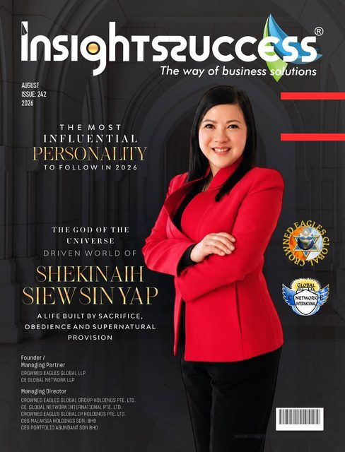
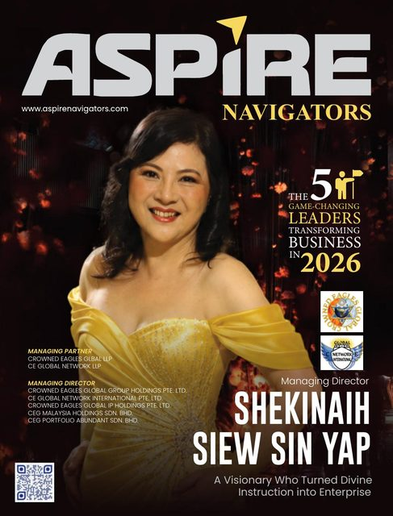
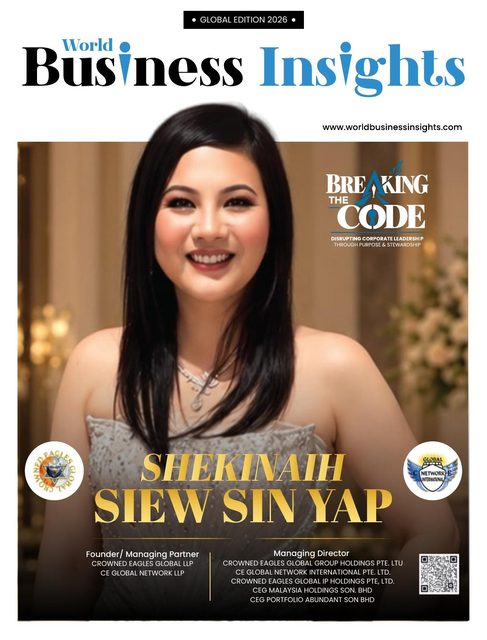

Magazine · Insights Success · November 2026
The Global Icon 2026
Insights Success gave its November 2026 edition, The Global Icon 2026, to PROF. (HON.) DR. SHEKINAIH SIEW SIN YAP and DR. J AARON K DAVID in a joint cover story: “Two Heavenly Messengers Sent to Save Mankind Before Earth Charred Like Mars in Less Than 40 Years”. The issue carries the Ten Green Board Messages, the Seven Missions of Crowned Eagles Global, their five books, their honours and their international addresses.
Read the magazine
The Global Icon 2026 · Insights Success
Swipe or tap the edge of a page to turn it. Double-tap to zoom. Read text opens the words of the page in large print.
From the feature
In Their Words
“SALVATION IS A PURIFICATION PROCESS. THE 10 PERFECT CHARACTER OF THE CREATOR IS THE SALVATION GARMENT TO ENTER HEAVEN’S PEARL GATE.”Insights Success, November 2026
“DR SHEKINAIH IS MY EYE; DR J AARON K DAVID IS MY MOUTH. DR SHEKINAIH IS MY HEAD; DR J AARON K DAVID IS MY BODY.”Insights Success, November 2026
“WHEN ALL ELSE FAILS, TRY THE GOD OF THE UNIVERSE IN SHEKINAIH. IT WORKS BECAUSE IT IS FULLY BACKED BY THE POWER OF HEAVEN!”Insights Success, November 2026
The full text
The Edition, Word for Word
Every word of the cover, the editorial and the cover story, page by page, as Insights Success printed it.
Cover
Insights Success®
The way of business solutions
www.insightssuccessmagazine.com
ISSN: 2998-8535
THE GLOBAL ICON 2026
TWO HEAVENLY MESSENGERS
SENT TO SAVE MANKIND
BEFORE
EARTH CHARRED
LIKE MARS IN LESS THAN
40 YEARS
HONORABLE PROFESSOR
DR SHEKINAIH SIEW SIN YAP
PD, Ph.D., D.Litt. (h.c.)
TOGETHER WITH
DR. J. AARON K. DAVID
PD, Ph.D
CO-FOUNDER & PARTNER
CHIEF ADVISORY & SUPPORTING OFFICER
CO-AUTHOR, BEHOLD MY MESSENGER SERIES
DR. SHEKINAIH SIEW SIN YAP
MANAGING PARTNER CUM MANAGING DIRECTOR
MANAGING PARTNER
CROWNED EAGLES GLOBAL LLP;
CE GLOBAL NETWORK LLP
MANAGING DIRECTOR
CROWNED EAGLES GLOBAL GROUP HOLDINGS PTE. LTD.;
CE GLOBAL NETWORK INTERNATIONAL PTE. LTD.;
CROWNED EAGLES GLOBAL IP HOLDINGS PTE. LTD.;
CEG MALAYSIA HOLDINGS SDN. BHD.;
CEG PORTFOLIO ABUNDANT SDN. BHD.
BIBLICAL TRINITY VOICE | SPIRIT OF TRUTH | HEAVEN JUDGE | DIVINE STRATEGIST | TRINITY AUTHOR & ARTIST | ACTIVATE RESURRECTION POWER | DESTINY IMPARTER | TRAIN 144,000 WARRIORS | GLOBAL DIVINITY, RELIGION, SPIRITUALITY & PEACE AMBASSADOR
HONORARY PROFESSOR OF PRACTICE IN STEWARDSHIP LEADERSHIP AND DIVINE COUNSEL | DISTINGUISHED FELLOW
HEAVEN'S GOOD NEWS TO HUMANITY ON EARTH, WORLDWIDE LEADERS, GOVERNMENTS, AND HUMANITY ON EARTH.
HEAVEN'S SOLUTION HAS REACHED EARTH TO YOU THIS DAY!!!
Page 4
Editorial
Page 5
Leadership Beyond the Conventional
Managing Editor
- Alaya Brown
Leadership takes many forms, shaped by conviction, purpose, responsibility, and a willingness to communicate ideas that reach beyond familiar boundaries. Influential leaders create conversations around purpose, service, human potential, and responsibility. Their journeys remind us that leadership is not defined only by achievements, but also by the values guiding every decision.
The role of an influential leader extends beyond personal success. It involves sharing knowledge, developing ideas, supporting people, and remaining committed to a vision through challenges and uncertainty. When professional experience is connected with purpose, leadership can inspire others and encourage reflection on what can be achieved through determination and conviction.
In this spirit, Insights Success presents THE GLOBAL ICON 2026 — TWO HEAVENLY MESSENGERS SENT TO SAVE MANKIND BEFORE EARTH CHARRED LIKE MARS IN LESS THAN 40 YEARS. This edition explores a distinctive leadership journey shaped by professional accomplishments, authorship, international engagements, spiritual declarations, and a stated commitment to serving humanity. It brings together themes of purpose, conviction, responsibility, and a vision reaching across professional and spiritual dimensions.
The featured leader brings together professional experience, authorship, international engagements, and a vision into one distinctive journey. Her work reflects a commitment to communicating ideas, pursuing purpose, and contributing to communities through her stated missions and initiatives. Her story offers readers an opportunity to consider how conviction and values can shape a leader’s direction and legacy.
Hope this edition offers thoughtful perspectives and a reading experience as you explore the ideas presented within these pages!
Page 8
The Signature Story
Page 9
THE GLOBAL ICON 2026 — TWO HEAVENLY MESSENGERS SENT TO SAVE MANKIND BEFORE EARTH CHARRED LIKE MARS IN LESS THAN 40 YEARS
THE GLOBAL ICON 2026
HEAVEN'S GOOD NEWS TO HUMANITY ON EARTH, WORLDWIDE LEADERS, GOVERNMENTS, AND HUMANITY ON EARTH.
HEAVEN'S SOLUTION HAS REACHED EARTH TO YOU THIS DAY!!!
HONORABLE PROFESSOR
DR. SHEKINAIH SIEW SIN YAP
PD, Ph.D., D.Litt. (h.c.)
TOGETHER WITH
DR. J. AARON K. DAVID
PD, Ph.D.
Page 11
PROLOGUE (Extract from BEHOLD MY NAMES)
A woman wearing a white robe with the word “THE HOLY SPIRIT” written on her body is standing alone under a pavilion. Suddenly, two sparrows flew toward her, and one rested on her left palm and the other on her right palm. She gently raised her left palm toward her face and opened her eyes widely to look at this sparrow observing every detail of it. As she looked at this sparrow with eyes of compassion, tears began to roll down on her cheek, and she began to sympathize with this little sparrow who was crying with rolling tears, for she saw a vision of this sparrow with humanity standing behind it, and scenes of the judgment of the Book of Revelation began to unfold before her very eyes; scene by scene, and chapter by chapter. She knew that the sparrow on her left palm symbolizes humanity and its tragic ending.
Next, she raised up her right palm to observe the sparrow that is resting on it with a serious look on her face. She squinted her eyes as smoke started to come from its head as she stared at this sparrow with her piercing eyes. Then, suddenly this sparrow turned into a green, standing reptile, and she saw a vision of the royalties and many of the world leaders taking their turns to superimpose on the reptile. Having them in derision, she starts to break out with a subtle laughter as she saw their doom. Then she releases the two sparrows and they flew away from her palms. Next, she knelt down solemnly on the floor in the center of the pavilion with her hands clasped, and prayed, “FATHER, raise up your third group of people to avenge the aliens of the Cosmoses who have oppressed your children for so long. Let your Avenger arrive and bring justice, for you are THE YAHWEH, THE ELOHIM of our (She/He) righteousness”.
Instantly, two people wearing Golden Empress and Emperor robes appeared and stood before her.
And the story begins…
THE TEN HEAVEN GREEN BOARD MESSAGES
NUMBER ONE — THE GOD OF THE UNIVERSE’S HEAVEN GREEN BOARD MESSAGE
BEHOLD, WE HAVE SENT OUR MESSENGERS. THE BIBLICAL TRINITY, THE GOD OF THE UNIVERSE, IN/SPOKE THROUGH AND MANIFEST THROUGH DR SHEKINAIH SIEW SIN YAP, THE MAJOR COSMOS JUDGE, OR THE MAJOR ANCIENT OF DAYS, OR THE MAJOR GREAT WHITE THRONE JUDGE, REPRESENTING THE FATHER, THE HOLY SPIRIT, JESUS, THE CREATOR OF UNIVERSE AND ALL CREATED BEINGS BOTH LIVING AND NON-LIVING.
Page 12
AND JESUS IN/SPOKE THROUGH, MANIFEST THROUGH THE ANGEL OF THE YAHWEH, DR J AARON K DAVID, THE MINOR COSMOS JUDGE, THE MEDIATOR FOR HUMANITY ON EARTH.
WHY DO WE SEND OUR MESSENGER TO MANIFEST IN THE TIMES SUCH AS THESE?
THIS IS BECAUSE THE EARTH HAS LESS THAN 40 YEARS BEFORE FIFTY COMETS IMPACT EARTH TO CHAR THE EARTH JUST LIKE PLANET MARS IN THE PAST.
THIS IS DUE TO WE ARE WRAPPING UP THE CLOSING OF THIS AGE IN ORDER TO PROGRESS AND PROCEED TO THE NEW MILLENNIAL AGE, WHERE WE WILL CREATE A NEW PLANET CALLED NEW EARTH.
SO WE HAVE ESTABLISHED CROWNED EAGLES GLOBAL AS OUR LAST-DAY MINISTRY ON EARTH TO SAVE ALL HUMANITY BEFORE THE PLANET EARTH IS BEING CHARRED, C-H-A-R-R-E-D, INTO ANOTHER PLANET MARS.
CROWNED EAGLES GLOBAL ARE CALLED TO EMPTY HELL AND POPULATE HEAVEN, AND WE, THE GOD OF THE UNIVERSE, THROUGH DR SHEKINAIH SIEW SIN YAP, HAVE WRITTEN THE MAJOR STRUCTURE, MACRO, AND THE ENTIRE STRUCTURE, THE MAJOR POINTS OF THE ENTIRE FIVE AND BEYOND BEHOLD MY MESSENGER BOOK SERIES TO GUIDE HUMANITY, HOW TO PREPARE FOR THE COMING DESTRUCTION IN ORDER TO PURIFY AND PREPARE YOUR SPIRIT MAN TO ENTER THE NEW EARTH THAT WE ARE CREATING TO PROGRESS HUMANITY, GLOBAL HUMANITY, TO A HIGHER DIMENSION IN THE SPIRITUAL WORLD.
LAY HOLD OF OUR FIVE BEHOLD MY MESSENGER BOOKS SERIES IN WWW.CROWNEDEAGLESGLOBAL.ORG OR FROM AMAZON WORLDWIDE AS YOUR LAST-DAY SURVIVAL KITS OR TOOLS TO PROGRESS TO A HIGHER DIMENSION.
THE TEN HEAVEN GREENBOARD MESSAGES
NUMBER TWO — THE GREEN BOARD MESSAGE
WORLD WAR THREE AND WORLD WAR FOUR, WHICH WILL INCLUDE NUCLEAR, WILL HIT EARTH VERY SOON.
DR SHEKINAIH SIEW SIN YAP, BEING OUR LAST-DAY MOSES, WHOM WE HAVE RELEASED THE LAST-DAYS DOCTRINES CALLED THE 50 PROTOCOLS OF HEAVEN, WHICH IS THE DETAILED PROGRESSION OR ENLIGHTENMENT OR EXPLANATION OF THE TEN COMMANDMENTS OF MOSES IN BIBLICAL TIMES, OR THE TWO COMMANDMENTS OF JESUS IN THE NEW TESTAMENT TIME. THESE 50 PROTOCOLS OF HEAVEN CALLED THE LAST-DAY DOCTRINE OR THE LAST-DAY COMMANDMENTS, IS TO SAVE HUMANITY AND EARTH FROM MASS DESTRUCTION.
THOSE WHO LAY HOLD OF IT AND PRACTICE IT WILL PROGRESS INTO A HIGHER DIMENSION IN THE NEW PLANET EARTH THAT WE ARE CREATING, AND ALL WHO ARE IN TOUCH AND TRAINED BY US THROUGH CROWNED EAGLES GLOBAL BY DR SHEKINAIH SIEW SIN YAP AND DR J AARON K DAVID, WILL BE BEAM UP IN OUR SPIRITUAL SPACESHIP, LAST-DAY NOAH ARK CALLED CROWNED EAGLES GLOBAL.
SO ALL HUMANITY ON EARTH, HEAR OUR DIRECT INSTRUCTION FROM HEAVEN, FROM YOUR CREATOR, WITH OUR EVERLASTING LOVE FOR YOU!!!
THE TEN HEAVEN GREEN BOARD MESSAGES
NUMBER THREE — THE GREEN BOARD MESSAGE
THE PLANET WILL GROW HOTTER AND HOTTER, AND WILL REACH BOILING POINT OF 60 DEGREES CELSIUS TO 70 DEGREES CELSIUS PROGRESSIVELY AND BEYOND, YEAR BY YEAR.
AS THE EARTH IS REACHING ITS BOILING POINT TOWARDS ITS ULTIMATE DESTRUCTION IN LESS THAN 40 YEARS, SO RUN TO US IN CROWNED EAGLES GLOBAL FOR YOUR SALVATION, RESTORATION, AND YOUR PRESERVATION IN THESE LAST DAYS.
Page 13
THE TEN HEAVEN GREEN BOARD MESSAGES
NUMBER FOUR — THE GREEN BOARD MESSAGE
WORLD WAR III AND IV, WHICH INCLUDE NUCLEAR, WILL HIT THE EARTH VERY SOON.
ALL HUMANITIES MUST CONTACT US AND LINK UP WITH US THROUGH CROWNED EAGLES GLOBAL, THE GOD OF THE UNIVERSE IN/SPOKE THROUGH DR SHEKINAIH SIEW SIN YAP AND JESUS IN/SPOKE THROUGH DR J AARON K DAVID TO PRESERVE YOU.
THE TEN HEAVEN GREEN BOARD MESSAGES
NUMBER FIVE — THE GREEN BOARD MESSAGE
MASSIVE FAMINE WILL HIT THE EARTH.
ALL MUST LINK UP WITH US IN CROWNED EAGLES GLOBAL THROUGH DR SHEKINAIH SIEW SIN YAP AND DR J AARON K DAVID, WHO ARE THE MAJOR AND MINOR COSMOS JUDGE AND THE JUDGE IN THE GREAT WHITE THRONE, FOR WE THROUGH DR SHEKINAIH SIEW SIN YAP HOLD AND POSSESS ALL THE BOOKS OF HUMANITY, NATIONS, AND LEADERS WHICH ARE RECORDED IN THE HEAVENLY COURT, AND WILL TELL YOU HOW TO UNDO THE WRONGS AND DO THE RIGHT, TO MINIMIZE THE SUFFERING ON THE CONSEQUENCES FOR EACH OF THE NATIONS OF THE WORLD AND HUMANITY ON EARTH.
THE TEN HEAVEN GREEN BOARD MESSAGES
NUMBER SIX — THE GREEN BOARD MESSAGE
WE CREATED HUMANITY ACCORDING TO OUR IMAGE BASED ON OUR 50 PROTOCOLS OF HEAVEN.
ALL HUMANITY ON EARTH, INCLUDING ALIENS, MUST LAY HOLD OF OUR FIVE BEHOLD MY MESSENGER BOOKS THROUGH OUR WEBSITE, WWW.CROWNEDEAGLESGLOBAL.ORG OR AMAZON WORLDWIDE, IN PARTICULARLY THE FIFTH BOOK CALLED BEHOLD MY MESSENGER FIVE: BEHOLD THE RESURRECTION OF THE DEAD AND THE POWER OF THE AGE TO COME.
AND THE TRINITY POINTS TOWARD THE PAGE WHERE " HOW TO PRAY FOR YOURSELF AND YOUR LOVED ONES".
THE PICTURE OF THE 50 PROTOCOLS THAT CORRESPOND TO THE 50 ACUPUNCTURE POINTS IN EACH OF YOUR BODY.
LAY HOLD OF THAT BOOK, PRAY THAT PRAYER INTO YOU AND YOUR COMMUNITY AND YOUR NATION AND YOUR FAMILY BY TAPPING INTO THE FAITH IN THE GOD OF THE UNIVERSE, MAJOR AND MINOR, IN/SPOKE THROUGH DR SHEKINAIH SIEW SIN YAP AND DR J AARON K DAVID RESPECTIVELY.
OTHERWISE YOUR PRAYER WILL BE POWERLESS AS YOUR POWER PLUG DID NOT PLUG INTO THE POWER OF US THAT RESTED IN DR SHEKINAIH SIEW SIN YAP AND DR J AARON K DAVID, OUR EARTHLY MANIFESTATION AND MESSENGER, SENT DIRECT FROM HEAVEN TO SAVE EARTH AND HUMANITY ON EARTH AND ALL ALIENS ALIKE.
THE TEN HEAVEN GREEN BOARD MESSAGES
NUMBER SEVEN — THE GREEN BOARD MESSAGE
MASSIVE FAMINE WILL HIT EARTH, WHERE ONE MAN WILL SEE ANOTHER MAN AS THEIR FOOD SOURCE.
HENCE ALL HUMANITY ON EARTH MUST LINK UP WITH US THROUGH IN/SPOKE THROUGH DR SHEKINAIH SIEW SIN YAP AND DR J AARON K DAVID, TO RESTORE BACK THE HOPE FOR YOUR NATIONS, FOR YOUR COUNTRY, FOR YOUR FAMILY, FOR YOUR COMMUNITY AND FOR YOURSELF.
THE TEN HEAVEN GREEN BOARD MESSAGES
NUMBER EIGHT — THE GREEN BOARD MESSAGE
DR SHEKINAIH SIEW SIN YAP IS OUR LAST-DAY MOSES, LAST-DAY NOAH, AND CROWNED EAGLES GLOBAL IS OUR LAST-DAY NOAH'S ARK.
THE 50 PROTOCOLS OF HEAVEN IS THE LAST-DAY COMMANDMENT, WHICH IT'S A DETAILED ENLIGHTENMENT OF THE TEN COMMANDMENTS OF MOSES OR THE TWO COMMANDMENTS OF JESUS, WHICH ALL HUMANITY WILL HAVE TO ALIGN THEMSELVES WITH US TO THIS 50 PROTOCOLS OF HEAVEN.
Page 14
BUT YOU MUST PLUG IN YOUR FAITH CABLE TO US IN/SPOKE THROUGH DR SHEKINAIH SIEW SIN YAP AND TO JESUS IN/SPOKE THROUGH DR J AARON K DAVID IN CROWNED EAGLES GLOBAL, OUR LAST DAYS MINISTRY ON EARTH BEFORE EARTH IS HIT BY THE 50 COMETS IMPACTING EARTH IN LESS THAN 40 YEARS' TIME.
OUR LOVE FOR YOU NEVER CHANGE.
IT IS IN HEAVEN'S CALENDAR THAT WE WRAP UP THIS AGE IN ORDER TO PROGRESS TO THE NEW MILLENNIAL AGE IN THE NEW PLANET CALLED NEW EARTH, THAT WE THROUGH CROWNED EAGLES GLOBAL, THROUGH DR SHEKINAIH SIEW SIN YAP AND DR J AARON K DAVID, WHO ARE SENT AS OUR MESSENGERS FROM HEAVEN TO PREPARE HUMANITY FOR THIS PROGRESS TO A HIGHER DIMENSION.
SO LINK UP WITH US THROUGH THEM IN CROWNED EAGLES GLOBAL IN SINGAPORE, BUY OUR FIVE BEHOLD MY MESSENGER BOOKS AND BEYOND, ATTEND OUR 18-HOUR ZOOM MONTHLY MEETING TO PREPARE YOU FOR YOUR PROGRESSION AND TO FULFILL YOUR DESTINY AND FOR YOUR PERFECTION, AND TO TRAIN YOU TO BE THE SAVIORS OF THE WORLD, THE ARCHANGELS, THE GUARDIANS OF THE GALAXY, TO RESTORE YOURSELF FROM THE FALLEN CREATION BACK TO THE PERFECTED STATE.
THE TEN HEAVEN GREEN BOARD MESSAGES
NUMBER NINE — THE GREEN BOARD MESSAGE
THE ARK OF THE COVENANT WHICH IS BELOW THE ROCK IN GOLGOTHA WHERE JESUS WAS BEING CRUCIFIED, HAVE FLEW INTO DR SHEKINAIH SIEW SIN YAP, SO IS THE ANCIENT NOAH'S ARK IN TURKEY’S MOUNT ARARAT HAVE FLEW INTO DR SHEKINAIH SIEW SIN YAP, AND SO IS THE ENTIRE MOUNT SINAI IN JABAL AL LAWZ IN SAUDI ARABIA HAVE FLEW INTO DR SHEKINAIH SIEW SIN YAP'S SPIRITUAL BODY, FOR THE REENACTMENT OF THE LAST-DAY MOSES THROUGH THE LAST DAYS 50 PROTOCOLS OF HEAVEN AND THROUGH THE LAST DAYS NOAH'S ARK THROUGH CROWNED EAGLES GLOBAL, THROUGH THE RESTORATION OF THE TEACHING FROM THE TREE OF LIFE THROUGH DR SHEKINAIH SIEW SIN YAP WHO REPRESENT THE TREE OF LIFE.
THIS FIVE BEHOLD MY MESSENGER BOOK AND BEYOND, IS DERIVED FROM OUR TEACHING FROM THIS TREE OF LIFE IN HEAVEN.
DR SHEKINAIH SIEW SIN YAP IS A MAJOR, COVERING CHERUB AND DR J AARON K DAVID IS A MINOR, SUBSERVIENT CHERUB THAT GUARD THE ARK OF THE COVENANT IN HEAVEN AND ON EARTH AND THE TREE OF LIFE IN HEAVEN!
THEREFORE, THOSE WHO HAVE EAR, LET HIM HEAR WHAT THE SPIRIT OF THE LIVING CREATOR IS SPEAKING TO YOU THIS DAY.
THE TEN HEAVEN GREEN BOARD MESSAGES
NUMBER TEN — THE GREEN BOARD MESSAGE
LAST BUT NOT LEAST.
ALL HUMANITY MUST READ OUR LAMBORGHINI SPEECH AND FERRARI SPEECH, OUR EGYPT SPEECH, AND ALL OUR PREVIOUS AND FUTURE SPEECH, WHICH IS TO ALERT AND TO WARN HUMANITY AND TO PREPARE YOU FOR WHAT IS COMING.
READ IT WITH RESPECT, WITH REVERENCE, WITH HONOR.
RESPOND TO US POSITIVELY THROUGH ALL THESE SPEECHES, AND THROUGH ALL OUR WRITINGS IN THIS MAGAZINE AND ALL OUR MAGAZINES, AND THROUGH OUR FIVE BEHOLD MY MESSENGER BOOK SERIES AND BEYOND.
BEHOLD, WE LOVE YOU VERY MUCH.
SIGNED, YOUR CREATOR, THE HEAVENLY FATHER, THE HOLY SPIRIT, AND JESUS, THE GOD OF THE UNIVERSE, WHO CREATED AND LOVE YOU, AND SENT HELP TO PERFECT AND RESTORE YOU AND BRING YOU TO FULFILL YOUR GREAT DIVINE DESTINY WHICH WE HAVE WROTE BEFORE WE SENT YOU TO EARTH.
Page 15
ALWAYS LOVE YOU, THE GOD OF THE UNIVERSE IN/SPOKE THROUGH DR SHEKINAIH SIEW SIN YAP, JESUS IN/SPOKE THROUGH DR J AARON K DAVID.
AMEN, AMEN, AMEN.
EDITOR’S INTRODUCTION — THE STORY BEHIND THE MESSAGES
One cover. Two authors. Five books. Years of work that began long before the stage lights—and spiritual testimonies that reach from a hospital scene to a heavenly courtroom, from Mount Sinai to the Ark of the Covenant. This special edition follows both strands without confusing them: the work that can be documented and the extraordinary experiences the authors recount. Its most important passages are not the editor’s inventions. They are the authors’ own words, reproduced from their approved manuscript.
THE WEIGHT OF A WORD
Some words decorate a page. Others place a demand upon the life of the person who receives them. Within DR SHEKINAIH SIEW SIN YAP’s spiritual testimony, the THREE WHITE BOARDS held before her by THE BIBLICAL TRINITY, THE GOD OF THE UNIVERSE, are not interchangeable with the separate GREEN BOARD IN HEAVEN. Their meaning is carried through the act of receiving, recording, discerning and acting upon the messages. The enduring question set before the reader is not merely what was seen, but what becomes of a life when its convictions require responsibility, perseverance and change.
01 — THE THREE WHITE BOARDS HELD BEFORE DR SHEKINAIH SIEW SIN YAP; THE GREEN BOARD IN HEAVEN
Before a word reaches a printed page, there is an encounter. In DR SHEKINAIH SIEW SIN YAP’s testimony, THE BIBLICAL TRINITY, THE GOD OF THE UNIVERSE, stands directly before her holding THREE WHITE BOARDS. Across them are written messages, decrees, instructions, answers and solutions. She describes a separate scene: THE GREEN BOARD IN HEAVEN. The distinction matters. One account places the whiteboards before the messenger; the other locates a green board in Heaven. Neither is a literary substitute for the other.
For the author, writing is not a matter of inventing a more dramatic phrase. She describes receiving words, yielding to the process, recording them, praying, discerning, correcting, and waiting for what she understands to be spiritual approval. The editorial task here is therefore unusually precise: introduce the human context without taking ownership of her testimony. The original passages that follow must speak in their own voice.
On one side of this story are images that resist ordinary description: heavenly boards, a courtroom, an ark, a mountain and a sceptre. On the other are five substantial books, the discipline of completing manuscripts, and years of ministry work. Read together, they trace a theological sequence from the formation of character to anointing, revealed names, judgment and THE POWER OF THE AGE TO COME.
This edition presents extraordinary spiritual claims as the authors’ religious testimony. It does not ask readers to confuse a visionary account with an independently verified public event. Instead, it invites them to examine the exact words, the teachings those words generated, and the lives the authors have devoted to communicating them.
THE UNSEEN YEARS
A title may be announced in seconds. Character takes years to form. The public sees the finished photograph, while the person within it remembers the private decisions, the work carried through without an audience, and the struggles that no award can describe. DR SHEKINAIH SIEW SIN YAP’s journey combines formal training in finance, audit and banking with her account of spiritual refinement.
Page 16
The connection gives the story its human force: the ability to manage outward responsibilities while undergoing an inward discipline that, in her teaching, can never be delegated to another.
02 — THE YIELDED VESSEL AND THE RESPONSIBILITY OF THE MESSENGER
LONG BEFORE THE GOLD LETTERING, THERE WAS THE LANGUAGE OF FIRE. DR SHEKINAIH SIEW SIN YAP describes crushing, powdering, burning and repeated purification—not as an ornamental metaphor for achievement, but as the difficult interior history through which she understands her mission. Another history runs beside it. She studied Accounting and Finance within Business Studies at Massey University, worked in Deloitte audit, and spent approximately six and a half years in financial control and corporate banking at UOB Singapore. These are not contradictory biographies: one concerns disciplined work in institutions; the other, the religious calling she says transformed the direction of her life.
THE CONTROLLING TEACHING IS EXPLICIT: SALVATION IS A PURIFICATION PROCESS. THE 10 PERFECT CHARACTER OF THE CREATOR IS THE SALVATION GARMENT TO ENTER HEAVEN'S PEARL GATE. This is the theological teaching presented by DR SHEKINAIH SIEW SIN YAP in connection with BEHOLD MY MESSENGER 1: BEHOLD MY GLORY.
It is easier to print a title than to show the years behind it. The author's account is of manuscripts brought back for correction, decisions reconsidered in prayer, and convictions carried through seasons without applause. She identifies the formation of perfect character, rather than recognition, as the essential work. The pages ahead preserve her controlling salvation declaration exactly where it appears in the approved source.
Page 17
Book One gives that demanding interior journey a vocabulary: offence, circumcision, crucifixion, resurrection and purification. In her teaching, each stage confronts the question that public honours cannot answer: what kind of person is being formed when all the decorations are taken away? The following original extracts should be read as statements of her faith, not replacements created by an editor.
THE WORK BEHIND THE PORTRAIT
Two people can stand together for a photograph, but a long partnership is made in the ordinary hours when no camera is present. Preparation, disagreement, understanding, travel, service, teaching and the return to work after each public appearance are part of a shared undertaking. DR J AARON K DAVID’s professional background and his supporting place in the authors’ religious account should be understood on their own terms. This is not an interchangeable pair of biographies: it is the history of two distinct lives joined in a sustained body of work.
03 — DR J AARON K DAVID: THE PAIRED COMMISSION
TWO DISTINCT BEGINNINGS; ONE EXTENDED PARTNERSHIP. DR J AARON K DAVID’s documented path includes civil-engineering training at Singapore Polytechnic, technical work and enterprise. DR SHEKINAIH SIEW SIN YAP arrived with a financial and banking background. Their subsequent work brought these contrasting practical disciplines into one shared ministry and authorship partnership. The contrast gives the joint cover more meaning than a ceremonial portrait alone could supply.
The record places the two across years of writing, prayer, travel and public addresses throughout Asia and beyond. A reader may see the polished photograph but not the ordinary labour behind it: preparation before a journey, the responsibilities of organising gatherings, the work of teaching unfamiliar audiences, and the return to manuscripts and organisational duties afterward. Sixteen years of service is not contained in a single awards night.
Page 18
Not all the available images are ceremonial. Their reported activity includes the distribution of food and blankets in Nagpur, community and interfaith encounters, and hands-on service. These details give the public language of compassion an everyday setting. In their spiritual account DR SHEKINAIH SIEW SIN YAP bears the principal messenger role; DR J AARON K DAVID appears as co-author, interpreter and supporting partner. Their responsibilities are described as distinct, not interchangeable.
THE COMPASSION THAT DOES NOT WAIT FOR A STAGE.
A mission is tested not only by the words spoken beneath stage lights, but by what its messengers are willing to give when there is no audience waiting to applaud. DR SHEKINAIH SIEW SIN YAP and DR J AARON K DAVID describe their spiritual roles as representing THE GOD OF THE UNIVERSE and JESUS, respectively. Their humanitarian activity offers readers an earthly dimension of that calling: the decision to approach another person with dignity, generosity and practical concern.
In Nagpur, India, their record includes giving food and blankets to people in need. Food answers an immediate hunger; a blanket answers the vulnerability of someone facing the day or night without adequate protection. These are ordinary objects, but their value is not ordinary to the person receiving them. The authors' account does not depend upon an invented number of recipients or an embellished description of the scene. The essential fact in their reported service is the act of giving.
Their accounts also include giving money to monks. This detail deserves space because generosity across religious traditions is not the same as seeking agreement. In a life frequently described through heavenly decrees and uncompromising spiritual convictions, the willingness to give to a monk offers a different image: an outstretched hand. The exact amounts and the recipients' reactions are not supplied in the available record, and should not be invented.
Page 19
In Kolkata, India, their participation in a WALK FOR PEACE places another kind of commitment beside these acts of material care. Walking publicly for peace is not the same as declaring that peace has already been secured. It is a visible expression of solidarity and an invitation to place human dignity above division. Together, the food, blankets, giving to monks and peace procession present a broader pattern of service rather than a sequence of ceremonial appearances.
For readers who may not share the authors' theological interpretation, these actions give a point of human connection. They invite a question more personal than the number of honours received: when confronted with another person's need, what will one give of one's money, energy, time and attention? In the authors' understanding, compassionate service belongs alongside purification, responsibility and the pursuit of perfect character. Its strength is measured not by publicity but by whether someone else is treated with care.
The original ABOUT THE AUTHORS passage uses a sequence of paired images—severity and mercy, eye and mouth, head and body. Those words belong to the authors’ spiritual testimony and should remain verbatim. The dramatic episode from BEHOLD MY GLORY that follows reveals another dimension of the same partnership: a schoolboy’s reported encounter with THE GREAT WHITE THRONE, followed by an identification that turns the episode into a personal summons.
THE HUMAN STORY BEHIND THE PAIRED COMMISSION
A storm, a road, a child and a hospital bed: the opening elements of this original scene could belong to an ordinary morning. Then its setting changes entirely. The passage moves from an accident to THE GREAT WHITE THRONE, a promise of obedience, and a conversation in which DR J AARON K DAVID is identified with the boy. This is reproduced as an original religious narrative, not a medically verified account of an afterlife experience. The author’s own scene begins below, without editorial rewriting.
ACT 2 SCENE 2 IN PRIVATE HOUSES WORLDWIDE (Extract from BEHOLD MY GLORY)
Timeline/Frame: Daily Event
Lo! And Behold! The sky is covered with dark cloud with occasion of sudden lightnings, that struck across the gloomy dark sky, and rain begin to drizzle followed by a sudden heavy outpour.
It is the wee hour of the morning whereby school children are walking to their nearby school, men and women carrying umbrella walking hurriedly to work. The traffic that morning was very heavy due to the heavy downpour.
All of a sudden, there is a loud bang. An accident had just occurred. A car has suddenly hit a primary school boy who was crossing the road in a hurry with her mother who was following behind him, as he was late for school. The child in white short sleeve shirt and light blue pant and tie lies motionless on the road was bleeding from his head. His mother in great shock rushes and stoop next to the child crying bitterly while shouting for help.
The driver quickly came out of his car and carried the child and put him at the back seat of his car, and together with the child’s mother, he drove and manage to exit from the heavy traffic to nearby hospital.
Upon arriving, the hospital staff quickly pushed out an emergency trolley bed and transfer the boy to the A & E ward to be examined.
Meanwhile, the mother was walking up and down outside the emergency ward anxiously waiting for news from the doctor concerning her son’s condition.
The boy was unconsciously lying on the A & E bed while the doctor and nurses were trying to rescue him.
Suddenly, the boy began to see his own spirit coming out of his body and the spirit began to float up and suddenly travel downward in great speed.
Page 20
The atmosphere was very dark and he began to fall at great lightning speed to the level four. At the entrance of the Great White Throne, two horned demons holding a trident began to drag him to kneel in front of THE GREAT WHITE THRONE. The boy then lifted up his head to look fearfully at the glorious light that proceeded out of THAT THRONE and was trembling.
Suddenly, a loud thunderous voice proceeded out of THE THRONE saying, “If you are given a second chance to live, will you obey Me unto death and fulfil My will for your life just like My son, JESUS?
The boy shivering and trembling with great fear begin to speak while kept nodding his head, “Yes. I will”.
Suddenly the boy began to open his eyes, awakened from his hospital bed in awe of what he had just seen, and heard. He began to relate his encounter with his mother as his mother held his hand nodded her head saying, “I believe my son”.
THE BIBLICAL TRINITY then appear to stand facing the boy in front of his bed and speak in unison voice to him, “Remember what you has just promise Us with this second life We have given back to you else there will be no more second chance.” They then vanish.
The boy was shock with his mouth wide open with unmoved eyes nodding his head repeatedly and said, “I will remember”.
David then ask, “ABBA FATHER, what SHEKINAIH just saw, sounds familiar. My inner witness tells me that the boy is me.”
ABBA FATHER said to him, “That’s right, DAVID, it is indeed you. You must descend first before you can ascend”.
“ABBA FATHER can you enlighten me what you meant? David ask THE FATHER. THE TRINITY then speak in unison through DR SHEKINAIH, “You need to have an encounter in the darkest moment of your life for you to treasure this fragile life of yours which have given you in order for you to take Us seriously and to grow up to the full stature of a Christ and a matured and perfect man in Our eyes. Do you get it now, David?
THE DISCIPLINE OF BUILDING
Vision can describe a destination, but organisations must still navigate the road. Contracts have to be honoured, colleagues supported, responsibilities assigned and decisions made when circumstances change. That practical dimension gives the seven corporate structures a more tangible meaning. Their presence in the story shows that the authors’ public activities are accompanied by continuing organisational obligations—not that corporate achievements verify spiritual experiences, but that conviction and everyday stewardship coexist.
04 — SEVEN CORPORATE INSTRUMENTS; ONE MINISTRY PURPOSE
Page 21
AN ARK NEEDS A STRUCTURE AS WELL AS A STORY. The authors’ public record has an unusually practical side: legal entities, operating responsibilities, logistics, publishing, people and contracts. DR SHEKINAIH SIEW SIN YAP’s accounting, audit and banking experience is relevant here, not as a decorative credential, but as preparation for stewardship and organisational decisions. The ministry and its associated businesses have different functions; the original narrative presents the institutions as earthly means through which the authors pursue their work.
The seven listed entities comprise two LLPs and five incorporated companies in Singapore and Malaysia. DR SHEKINAIH SIEW SIN YAP’s managing-partner and managing-director responsibilities span these structures. The distinctions matter to readers evaluating a public profile: a spiritual designation is not a corporate appointment, and a registered organisation is not by itself evidence for a supernatural claim. The company register below is retained in its source wording.
MANAGING PARTNER — CROWNED EAGLES GLOBAL LLP | CE GLOBAL NETWORK LLP
MANAGING DIRECTOR — CROWNED EAGLES GLOBAL GROUP HOLDINGS PTE. LTD. | CE GLOBAL NETWORK INTERNATIONAL PTE. LTD. | CROWNED EAGLES GLOBAL IP HOLDINGS PTE. LTD. | CEG MALAYSIA HOLDINGS SDN. BHD. | CEG PORTFOLIO ABUNDANT SDN. BHD.
DR J AARON K DAVID’s PARTNERSHIP AND ADVISORY AND SUPPORT ROLES provide a second point of continuity across the organisations. The story is compelling precisely because it holds together apparently distant responsibilities: ministry meetings and shipping operations, devotional books and business administration, international addresses and the paperwork that continues after an event has ended.
FROM DECLARATION TO SERVICE
The true test of a mission is whether it asks something of the messenger when there is no applause. Intercession calls for attention to another person’s burden. Teaching calls for patience. Guidance calls for discernment. Restoration demands a willingness to confront what has gone wrong. The seven stated missions should therefore be read not as seven ornamental slogans but as seven kinds of responsibility reaching from the individual to the wider community.
Page 22
05 — THE SEVEN MISSIONS OF CROWNED EAGLES GLOBAL
SEVEN MISSIONS, NOT SEVEN SLOGANS. The purpose of CROWNED EAGLES GLOBAL is expressed through seven distinct forms of service. Some concern listening and interceding for individuals; others address leaders, nations and what the authors believe are urgent warnings. Still others concern restoration, difficult problems and human destiny. Each mission below has its own scope, and none should be swallowed by a single generic sentence about inspiration.
The most useful way to read the seven together is as a progression: stand between, listen, warn, communicate, restore, confront and impart. They are reproduced below as the ministry’s stated commitments. Claims of miraculous outcomes or heavenly decrees elsewhere in the edition remain the authors’ testimony, while the practical history of their teaching and outreach can be assessed on its own terms.
MISSION ONE — BRIDGE BETWEEN HEAVEN AND EARTH: To stand as a bridge and advocate between Heaven and humanity, interceding for individuals, families, communities, cities, countries and nations.
MISSION TWO — HEAVEN’S ANSWERS AND SOLUTIONS: To bring what DR SHEKINAIH understands as Heaven’s answers, direction and solutions to individuals, families, businesses, communities, governments and nations.
MISSION THREE — ALERT AND PREPARE HUMANITY: To warn, prepare and equip humanity concerning dangers, disruptions and circumstances ahead, so that where possible they may be avoided, reduced, overcome or turned around.
MISSION FOUR — HEAVEN’S DECREES FOR LEADERS, NATIONS AND WORLD EVENTS: To communicate what DR SHEKINAIH understands as THE GOD OF THE UNIVERSE’S decrees, prophetic revelation and advance spiritual direction concerning leaders, nations and major world events.
MISSION FIVE — HEALING, MIRACLES AND RESTORATION: To minister toward physical, emotional, spiritual, relational and whole-life restoration, while respecting appropriate medical and professional care.
MISSION SIX — SOLUTIONS TO THE SEEMINGLY UNSOLVABLE: To confront problems that appear impossible at personal, family, financial, organisational, governmental, national or international levels, refusing to assume that “impossible” always means “finished.”
MISSION SEVEN — DESTINY IMPARTATION: To help people, communities and nations discover and fulfil what DR SHEKINAIH understands as their original God-given purpose and destiny.
THE COURAGE TO BE CHANGED
The greatest struggle described in these teachings is not always against an event outside a person. It is also against the habits and strongholds that resist examination within. The author’s sequence—revealing the stronghold, crushing it to zero, bringing forth fruits meet for repentance, and replacing it with perfect character—makes transformation an active discipline. The significance for the reader is exacting: change is more than admiration for a spiritual ideal; it must be brought into the choices of daily life.
06 — THE 50 PROTOCOLS OF HEAVEN AND PERFECT CHARACTER
THE QUESTION IS NOT MERELY WHAT THE RULES SAY, BUT WHAT THEY MAKE OF A LIFE. THE 50 PROTOCOLS OF HEAVEN occupy a central place in the authors’ last-days teaching. They describe them as a detailed enlightenment or progression of the commandments associated with Moses and JESUS. The subject is not just a numerical scheme: it is the work of exposing strongholds, confronting conduct and forming the character that the authors understand to be necessary for spiritual readiness.
Within this account, repentance must become visible in its fruits. The author’s stated sequence is direct: reveal the stronghold; crush it to zero; show fruits meet for repentance; replace it with perfect character. That is a demanding account of transformation rather than a ceremonial label. The complete controlling salvation declaration appears below in the author’s approved wording.
Book Five also directs readers to a prayer section and describes a spiritual correspondence involving fifty bodily acupuncture points. That correspondence is presented as religious instruction, not established medical anatomy or a substitute for healthcare.
Page 23
The distinction protects both the integrity of the author's original teaching and the reader’s ability to understand what kind of claim is being made.
SALVATION IS A PURIFICATION PROCESS. THE 10 PERFECT CHARACTER OF THE CREATOR IS THE SALVATION GARMENT TO ENTER HEAVEN’S PEARL GATE. This is the controlling declaration through which the character teaching in this edition is to be understood.
FIVE BOOKS THAT ASK FIVE DIFFERENT QUESTIONS
What must be purified? What must be endured and learned? What do the seven names signify in the authors’ theology? How does a life stand before judgment? What does the teaching mean by resurrection and THE POWER OF THE AGE TO COME? These questions lead the reader through the five distinct volumes. The original descriptions that follow must remain complete and unaltered; the editorial purpose is to open a door to each book, not to speak over its author.
07 — FIVE BOOKS: ONE CONTINUING WORK
FIVE DOORS INTO ONE BODY OF TEACHING. The books are not five variations on an identical theme. BEHOLD MY GLORY approaches purification and salvation; BEHOLD MY ANOINTED ONES takes up training and endurance; BEHOLD THE 7 NAMES OF THE TRINITY describes sacred names and their functions; BEHOLD MY GREAT WHITE THRONE turns toward judgment; and BEHOLD THE RESURRECTION OF THE DEAD addresses resurrection and THE POWER OF THE AGE TO COME. The reader encounters a developing theology rather than a disconnected list of titles.
The significance of this sequence becomes clearer when the complete original descriptions are allowed room to breathe. Each has its own vocabulary, urgency and internal teaching. Reducing them to promotional blurbs would remove precisely the distinctions that make the series intelligible. The full approved descriptions below are preserved, rather than rewritten in the magazine’s voice.
Principal and Lead Author: DR SHEKINAIH SIEW SIN YAP. Co-Author: DR J AARON K DAVID. The published series contains FIVE books; the phrase “and beyond” does not create an additional sixth volume. Readers seeking the complete prayers, diagrams, conditions and doctrine should consult the books themselves.
08 — BOOK ONE — BEHOLD MY GLORY
THE CLIMB, THE GARMENT AND THE PEARL GATE
"BEHOLD MY MESSENGER 1: BEHOLD MY GLORY" unveils the mysteries of THE TRINITY IN/SPOKE THROUGH DR SHEKINAIH and JESUS IN/SPOKE THROUGH DR J AARON K DAVID, whose presence spans all Scripture, from Genesis to Revelation. This book offers not just spiritual insight but a direct, transformative encounter with God's glory and His eternal plan for humanity, revealed through DR SHEKINAIH and DR J AARON K DAVID, the chosen vessels of THE TRINITY.
Throughout the Old Testament, New Testament, and Revelation, DR SHEKINAIH and DR J AARON K DAVID act as divine messengers, executing THE TRINITY'S WILL and playing vital roles in unfolding biblical prophecy. This book prepares readers to embrace their roles in carrying out divine decrees across spiritual realms.
A cornerstone of "BEHOLD MY MESSENGER 1" is the unveiling of the TEN PERFECT CHARACTER OF JESUS, REPRESENTING THE TRUE GARMENT OF SALVATION REQUIRED TO PASS THROUGH HEAVEN'S DOOR. It explains that salvation is not merely about faith but about embodying these divine qualities. Each believer must pass a divine test, achieving perfection in all ten traits to enter Heaven's Kingdom.
Even Old Testament prophets and New Testament disciples are revealed to reside outside Heaven’s Gates because they did not perfect all ten character traits of JESUS. This book reveals how even the most devout must meet the highest standards of divine perfection to be allowed into Heaven's Door.
Page 24
THE TEN PERFECT CHARACTER includes qualities such as single-mindedness, meekness of love, patience, and obedience unto death. This book guides readers on how to embody these traits, which are not just virtues but divine standards set by THE TRINITY. Only those who embody them perfectly will pass the ultimate test of salvation.
Furthermore, "BEHOLD MY MESSENGER 1" sheds new light on the concept of salvation. Many may believe they are saved, but according to the revelations from THE TRINITY IN/SPOKE THROUGH DR SHEKINAIH and JESUS IN/SPOKE THROUGH DR J AARON K DAVID, salvation requires perfect alignment with the Ten Perfect Character of Jesus. The Garment of Perfection is essential, and only those who wear it will pass through Heaven’s Door.
In addition to its teachings about salvation, this book delves into the deeper mysteries of God's Glory and the role of THE TRINITY IN/SPOKE THROUGH DR SHEKINAIH and JESUS IN/SPOKE THROUGH DR J AARON K DAVID throughout the biblical narrative. These figures are not new but have always acted as co-executors of God's will in moments of prophecy, judgment, and mercy. The book also reveals their critical role in the End Times, as they execute THE TRINITY'S divine plan leading to the final judgment.
As the world moves closer to the events foretold in Revelation, "BEHOLD MY MESSENGER 1" serves as a guide for humanity to understand the divine criteria for salvation and prepare for the trials ahead. It reveals the roadmap to eternal life in Heaven’s Kingdom. Ignoring its message risks being left outside Heaven’s Gate, while those who heed its revelations will be fully prepared for final judgment.
This book urgently calls for humanity to awaken to the realities of the End Times and align with the true path to salvation. Through THE TRINITY IN/SPOKE THROUGH DR SHEKINAIH and JESUS IN/SPOKE THROUGH DR J AARON K DAVID, readers gain the divine knowledge needed to pass the final judgment and secure their place in eternity.
09 — BOOK TWO — BEHOLD MY ANOINTED
THE TRAINING OF THE ANOINTED ONES
Behold My Messenger 2: Behold My Anointed Ones is a powerful, divinely inspired guide for believers seeking spiritual transformation and maturity in the last days. This book, born from prophetic visions and divine encounters, offers a path to becoming one of God’s Anointed Ones—His end-time warriors and spiritual champions chosen to reign with Christ.
More than a theological study, this book is a spiritual training manual, commissioned by THE TRINITY through their representatives, DR SHEKINAIH and DR J AARON K DAVID, to prepare the 144,000 Brides and 7,000 Anointed Ones. It emphasizes the need for spiritual discipline, obedience, and endurance through trials guided by THE HOLY SPIRIT. Behold My Anointed Ones outlines the essential steps to attain spiritual power and perfection for the millennium.
Each chapter explores key spiritual doctrines, including:
The Four Living Creatures: A prophetic revelation connecting heavenly beings to the fourfold ministries (apostles, prophets, evangelists, and teachers).
Incarnation of THE HOLY SPIRIT: Teachings on how THE HOLY SPIRIT manifests through chosen vessels to fulfill divine purposes.
The Ministry of Offence: God’s messengers will challenge and expose sin, leading believers into submission to THE TRINITY.
The book delves into prophetic signs, such as visions of the Red Dragon, encounters with spiritual forces, and the final battle between good and evil. Readers will learn to crucify their flesh, embrace spiritual discipline, and partake in the glory and power of the age to come.
Behold My Anointed Ones calls believers to prepare for great tribulation and emphasizes spiritual readiness for martyrdom—a necessary step for inheriting the Kingdom of Heaven. This process involves submitting to God’s plan and embracing one’s divine role as His end-time messenger. Only through this transformation will believers be empowered with spiritual mantles and equipped to rule and judge the nations.
Filled with divine instructions, this book provides practical steps for achieving divine perfection, overcoming the flesh, and standing firm as a warrior in God’s ultimate plan. It is a clarion call for the last days’ saints to awaken, submit, and prepare for THE KINGDOM.
Page 25
Key revelations in this book include:
Understanding how God’s messengers will expose sin, guiding the faithful into submission to THE TRINITY.
Embracing the discipline required to face martyrdom and reign with Christ during the coming millennium.
Recognizing the urgency of spiritual readiness as we approach the final days of tribulation and the return of Christ.
10 — BOOK THREE — BEHOLD MY NAMES
THE SEVEN NAMES AND THEIR FUNCTIONS
THE HOUR OF REVELATION
The hour has come to reveal what lies before mankind as the Book of Revelation unfolds. We urge you to secure a copy of BEHOLD MY MESSENGER 3: BEHOLD THE 7 NAMES OF THE TRINITY as your guide when calamity strikes like a thief in the night without warning. Heaven’s clock is ticking; only a moment remains before the ultimate strike. Declares THE TRINITY.
BEHOLD MY MESSENGER 3 unveils the hidden, divine power within GOD's sacred names. These names are not just titles—they are keys to unlocking supernatural power, divine protection, and the fulfillment of Heaven’s promises. As the end of days draws closer, spiritual warfare intensifies, and time is running out. These sacred names are the ultimate weapons in the battle between light and darkness.
THE EH YEH – The great "I AM." The mastermind who wrote the script of life and controls even the adversary. HIS name declares GOD's sovereignty, ensuring that no darkness prevails. When called upon, THE EH YEH shifts circumstances to fulfill HIS divine will.
THE YAHWEH – THE RIGHTEOUS JUDGE who embodies mercy, justice, and righteousness. HIS name promises that divine justice will prevail, restoring order amidst chaos. THE YAHWEH assures the faithful that righteousness will stand, even in a world overrun by darkness.
THE ELOHIM – THE POSSESSOR OF HEAVEN AND EARTH, THE CREATOR OF ALL THINGS, SEEN AND UNSEEN. THE ELOHIM holds the authority to restore creation, ensuring HIS purpose is fulfilled in the final days. Calling upon HIS name brings divine restoration.
THE EL – THE ALMIGHTY ONE TO WHOM ALL MUST SURRENDER. HE strengthens those who submit to HIS will, giving them the power to resist the accuser. THE EL has THE FINAL SAY, standing as THE ULTIMATE SOURCE OF PROTECTION AND STRENGTH.
THE YAHWEH SABAOTH – THE LORD OF HOSTS, COMMANDING THE ARMIES OF HEAVEN, EARTH, AND BENEATH. THE YAHWEH SABAOTH fights spiritual battles on behalf of HIS people, ensuring no force can withstand HIS power. HIS name brings divine assistance to overcome spiritual oppression.
THE SHADDAI – THE GREAT DESTROYER AND FURY OF GOD. THE SHADDAI ENFORCES DIVINE JUSTICE AND DESTROYS THOSE WHO STAND AGAINST GOD. HIS name reminds believers that judgment is imminent, and alignment with GOD’s will is crucial to survive the coming trials.
THE ADONAI – THE GOD OF REVERSALS, WHO HAS THE LAST LAUGH! WHO TRANSFORMS WHAT WAS MEANT FOR HARM INTO GOOD. THE ADONAI ENSURES HIS PEOPLE’S VICTORY BY TURNING DEFEAT INTO TRIUMPH. HE BRINGS DIVINE TURNAROUNDS, EVEN IN PERILOUS TIMES.
BEHOLD MY MESSENGER 3 is not just a book—it is a divine tool for navigating the last days. Each name of GOD holds supernatural authority to unlock protection, provision, and victory. These names are spiritual keys to overcoming trials and tribulations during the final days. The revelations in this book are essential for anyone seeking to walk in Heaven’s full power and protection.
As the Book of Revelation unfolds, the names of GOD will serve as your shield and sword, empowering you to claim HIS promises. Whether you seek healing, deliverance, breakthrough, or protection, these names hold the power to change your situation. BEHOLD MY MESSENGER 3 reveals how THE SEVEN NAMES OF THE TRINITY can empower you to walk in supernatural victory during perilous times.
Time is running out. The divine clock is ticking, and the hour of trial is fast approaching. BEHOLD MY MESSENGER 3 offers you the spiritual tools you need to face the challenges ahead. Secure your copy today and arm yourself with THE SEVEN NAMES OF THE TRINITY
Page 26
IN/SPOKE THROUGH DR SHEKINAIH AND JESUS IN/SPOKE THROUGH DR J AARON K DAVID—the ultimate weapons of divine power, protection, and victory!
11 — BOOK FOUR — BEHOLD MY GREAT WHITE THRONE
HEAVENLY RECORDS AND THE GREAT WHITE THRONE
Behold My Messenger 4: Behold My Great White Throne unveils a divine revelation of cosmic significance directly from THE TRINITY—THE HEAVENLY FATHER, THE HOLY SPIRIT, and THE YAHWEH JESUS CHRIST. This book transcends traditional theology to deliver urgent prophetic insights about humanity's final judgment. It is not just a spiritual guide but a direct decree from Heaven, delivered through the chosen vessels, THE TRINITY IN/SPOKE THROUGH DR SHEKINAIH and JESUS IN/SPOKE THROUGH DR J AARON K DAVID, THE TWO CHERUBIM OF GLORY that guard THE ARK OF THE COVENANT and THE TREE OF LIFE, is the executor and co-executor of THE GREAT WHITE THRONE, respectively.
This is not merely another spiritual book but a divine wake-up call for all humanity to align with Heaven's judgment criteria before the End Times. BEHOLD MY MESSENGER 4, reveals THE DESCENT OF THE GREAT WHITE THRONE through powerful visions and spiritual encounters, showing how every soul—without exception—will be brought before the throne of divine judgment. The living and the dead will be called to account for their lives.
This book explains the roles of THE TWO CHERUBIM OF GLORY, DR SHEKINAIH, THE COVERING CHERUB, and DR J AARON K DAVID, THE SUBSERVIENT CHERUB, who hold ultimate authority in executing THE TRINITY’s will. THE TRINITY IN/SPOKE THROUGH DR SHEKINAIH, acting as the divine voice of Heaven, seals every decree, ensuring the final judgment is delivered with perfect precision. JESUS IN/SPOKE THROUGH DR J AARON K DAVID co-executes these decrees in earthly and spiritual realms. BEHOLD MY MESSENGER 4, BEHOLD MY GREAT WHITE THRONE reveals the exact criteria by which every individual, leader, and nation will be judged, making this divine knowledge crucial for anyone who wishes to stand without fear in the presence of God during the final judgment.
This is not just a teaching; it’s a transformation. Readers are called to prepare by embracing purity, holiness, and divine obedience. As the End Times unfolds, those who heed the divine decrees will be blessed, while those who ignore them face eternal consequences.
The book provides the ultimate roadmap for navigating these perilous times. It serves as both a shield and a guide, helping believers find safety in the Kingdom of Heaven while equipping them to face the trials ahead. Readers gain insight into the deepest mysteries of divine justice, mercy, and the cosmic balance of light and darkness through these revelations.
BEHOLD MY MESSENGER 4, emphasizes that every believer must undergo purification to stand before THE GREAT WHITE THRONE. It offers practical steps for achieving holiness, stressing the importance of repentance, humility, and submission. In these final days of spiritual warfare, the book guides readers to rise above darkness, aligning with THE TRINITY’s divine order.
The book is also a warning. It details the eternal separation awaiting those who fail to meet the divine criteria for resurrection and judgment. The time to act is now—before the final trumpet sounds and the opportunity for repentance is lost. As the divine clock ticks toward the final hour, Behold My Messenger 4 becomes a lifeline, pulling individuals and nations into the light of salvation.
BEHOLD MY MESSENGER 4: BEHOLD MY GREAT WHITE THRONE is more than a book—it is the key to unlocking the divine mysteries of the end of days. It calls every reader to reflect on their life, repent, and realign with Heaven’s decrees before it is too late. Those who embrace these truths will stand glorified before THE TRINITY, ready to enter the Kingdom of Heaven.
Don’t miss the chance to secure your place in the divine plan. Align with Heaven's criteria before the final trumpet sounds. This is the book that will define humanity's spiritual future. Get your copy today and prepare for the ultimate reckoning.
ALWAYS LOVE YOU,
THE TRINITY IN/SPOKE THROUGH DR SHEKINAIH AND JESUS IN/SPOKE THROUGH DR J AARON K DAVID
Page 27
12 — BOOK FIVE — BEHOLD THE RESURRECTION OF THE DEAD
THE POWER OF THE AGE TO COME
TIME IS RUNNING OUT! Take hold of this book now—your life and the lives of your loved ones hang in the balance. Before unexpected death strikes, discover if you or your loved ones qualify for a second chance—a resurrection to fulfill your divine destiny within CROWNED EAGLES GLOBAL, OUR LAST DAYS MINISTRY ON EARTH!
BEHOLD MY MESSENGER 5: BEHOLD THE RESURRECTION OF THE DEAD is more than just a book. It is your divine lifeline. In these pages, THE TRINITY IN/SPOKE THROUGH SHEKINAIH reveals their LAST DAYS DOCTRINES: THE POWER OF THE AGE TO COME and THE RESURRECTION OF THE DEAD. This is not a mystery reserved for the past—it is your reality today.
You will learn the 7 SACRED CRITERIA for moving in this resurrection power. Discover how these conditions must align with divine will and timing to unlock Heaven’s miraculous intervention. Through this revelation, you’ll see how resurrection can be granted—but only if faith and obedience are met. Witness powerful testimonies like the coma man in China, whose life was restored within hours, a living example of Heaven’s resurrection power through THE TRINITY IN/SPOKE THROUGH DR SHEKINAIH.
Chai Lin's 24-Hour Miracle: Death Undone. Chai Lin’s journey from the brink of death to vibrant life in just 24 hours will shatter everything you thought you knew about life and death. This is more than a story—it’s living proof that the resurrection power unveiled in this book is real and available for YOU today! What areas of your life need resurrection? Step into that same power by aligning with THE TRINITY IN/SPOKE THROUGH DR SHEKINAIH.
Jose’s Quantum Leap: $30K to millions in 13 Years! Can financial miracles truly happen? YES! Jose’s testimony of skyrocketing from $30K to millions million in just 13 years will leave you speechless. This isn’t just financial success—it’s divine favor. YOUR financial future can change the moment you align with Heaven’s purpose.
Cape Town’s 3-Year Drought Annihilated! Nature itself bends to divine will! Cape Town faced certain catastrophe as “Day Zero” loomed, but just when all hope seemed lost, THE TRINITY IN/SPOKE THROUGH DR SHEKINAIH intervened, bringing rain and ending the drought. This miraculous weather reversal shows that even the elements of Earth obey divine command. What unmovable obstacles in your life need a supernatural shift?
Trump’s 2016 Victory Foretold – A Prophecy Fulfilled! The world was stunned by Trump’s 2016 victory. What the world didn’t know was that this political upheaval had already been foretold by THE TRINITY IN/SPOKE THROUGH DR SHEKINAIH. This event redefined how we understand leadership, global governance, and divine prophecy.
Jeremyrl’s Instant Deliverance from Torment! Six months of relentless torment—GONE in an instant! Jeremyrl’s story of deliverance from spiritual attacks reveals the unstoppable power of THE TRINITY IN/SPOKE THROUGH DR SHEKINAIH. What forces of darkness need to be broken in your life? The freedom you seek is already here—if you align with Heaven’s power.
Do you feel it? This book is more than words on a page—it’s a trillion-megaton explosion of divine power waiting to reshape your existence. These are not just testimonies—they are calls to action. The divine power that raised the dead, shattered droughts, overturned governments, and broke chains of torment is HERE, NOW, and available to YOU. If you want to witness the impossible, this is your moment.
Pick up BEHOLD MY MESSENGER 5 today, and prepare for the most powerful transformation of your life as the resurrection power of THE TRINITY IN/SPOKE THROUGH DR SHEKINAIH and JESUS IN/SPOKE THROUGH DR J AARON K DAVID moves through you.
Yours Always, with Eternal Love and Power,
THE TRINITY IN/SPOKE THROUGH DR SHEKINAIH
AND JESUS IN/SPOKE THROUGH DR J AARON K DAVID
A MANDATE BEYOND THE JOURNEY
A journey has a route and an ending. A calling, as the authors describe it, continues after the traveller returns home. In DR SHEKINAIH SIEW SIN YAP’s testimony, Mount Sinai and the ancient Noah’s Ark are linked to a spiritual mandate she identifies with the LAST-DAYS MOSES and LAST-DAYS NOAH.
Page 28
The significance she assigns to these encounters is carried forward through writing and teaching. The essential distinction remains: the journeys concern physical places; the spiritual transfer she describes belongs to her personal religious account.
13 — MOUNT SINAI, NOAH’S ARK AND THE LAST-DAYS MANDATE
THREE PLACES, THREE ENCOUNTERS, ONE RECURRING QUESTION: WHAT DOES IT MEAN TO CARRY AN ANCIENT CALLING INTO THE PRESENT? In her account of travel to Saudi Arabia and Turkey during 2026, DR SHEKINAIH SIEW SIN YAP connects Mount Sinai and places associated with Noah’s Ark to visions in which these sacred referents entered her spiritual body. She understands the experiences through the designations LAST-DAYS MOSES and LAST-DAYS NOAH. The places are geographic; the described transfer is a spiritual testimony.
Page 29
Her teaching joins these images to two practical expressions of her mission: the 50 PROTOCOLS OF HEAVEN as last-days instruction, and CROWNED EAGLES GLOBAL as the LAST-DAYS NOAH’S ARK. The contrast is striking—ancient symbols presented alongside contemporary books, Zoom teaching and an organised ministry. Their relationship should be explained faithfully, without adding fictional details to either the journeys or the visions.
The Ten Heaven Green Board Messages also contain predictions about conflict, famine, rising heat and comet impacts. Those are the authors’ religious forecasts, not verified scientific or geopolitical predictions. The original wording must remain intact, while the surrounding editorial account should consistently identify the nature of the claim.
Across the five books the authors identify a longer preparation than a dramatic warning alone could provide: purification of character, training and endurance, the names of THE TRINITY, the judgment account, and teachings concerning resurrection. That doctrinal progression links the ancient places to the authors’ stated work in the present.
THE IMAGE OF A LIFE MADE RESPONSIBLE
The Ark narrative should not be reduced to an extraordinary image alone. In the author’s account, its meaning is bound to guardianship, the TREE OF LIFE and the work that follows the encounter. The vision becomes a thread connecting the books, the paired authorship and the ministry’s understanding of restoration. Presented faithfully, the story invites readers to examine not only a symbol but also the responsibilities that the author believes the symbol confers.
14 — THE GOLDEN ARK, GOLGOTHA THE PLACE OF THE SKULL, AND THE TREE OF LIFE
Page 30
BENEATH A STORY OF GLOBAL TRAVEL IS A VISION CENTRED ON A ROCK. DR SHEKINAIH SIEW SIN YAP describes praying few years back, near GOLGOTHA, THE PLACE OF THE SKULL, where JESUS was crucified and seeing THE ARK OF THE COVENANT emerge from beneath the rock and enter her spiritual body. She regards the vision as central to her identity as THE LIVING ARK OF THE COVENANT. It is her personal religious experience, not a verified physical discovery or movement of an archaeological object.
The accompanying theology describes DR SHEKINAIH SIEW SIN YAP as THE COVERING CHERUB and DR J AARON K DAVID as THE SUBSERVIENT CHERUB. Within their original account, the two are connected to THE ARK OF THE COVENANT and THE TREE OF LIFE. The titles are religious designations presented in their own writings.
The TREE OF LIFE supplies another image for the authorship they describe. Their testimony portrays the five books and subsequent writings as proceeding from that teaching.
This makes the Ark narrative more than a single extraordinary scene: in the authors’ understanding, it explains why a continuing body of instruction follows the vision.
The same images recur in BEHOLD MY GREAT WHITE THRONE, where the account places distinctive functions upon the two cherubim. Keeping those functions consistent across the original book overview, the ten messages and the editorial narration is essential to the integrity of this edition.
TWO ENCOUNTERS, A SINGLE THEME OF RESTORATION
The two golden-sceptre encounters are not the same scene. At Potala Palace, DR SHEKINAIH SIEW SIN YAP recounts a vision in which the RED DRAGON, identified by her as Lucifer, surrendered the GOLDEN SCEPTRE back to her as THE LAST EVE. She interprets this as the reversal of the authority surrendered by THE FIRST ADAM after eating the forbidden fruit and being removed from the GARDEN OF EDEN and access to THE TREE OF LIFE. Separately, in a meeting with the Dalai Lama, she describes a GOLDEN SCEPTRE flying OUT OF THE DALAI LAMA’S BODY and entering her own body during their handshake—not out of an object in his hand. In her teaching, restoration is not merely a title: the FIVE BEHOLD MY MESSENGER BOOKS and the monthly 18-hour teachings are presented as teaching FROM THE TREE OF LIFE, intended to guide humanity toward the pre-Fall state. These descriptions record her spiritual testimony, not independently confirmed supernatural events.
15 — POTALA PALACE, THE DALAI LAMA, AND THE GOLDEN SCEPTRE
THE AUTHORITY SURRENDERED BY THE FIRST ADAM—AND THE RESTORATION TO THE LAST EVE. In the spiritual testimony of DR SHEKINAIH SIEW SIN YAP, the golden sceptre represents authority that the FIRST ADAM surrendered to Lucifer. Her account identifies the restoration of that authority to the LAST EVE as the meaning joining two distinct encounters: one at the Potala Palace in Tibet, and another during a personal meeting and handshake with the Dalai Lama. These are her descriptions of visionary and spiritual experiences, not independently established historical transfers of authority.
THE FIRST ENCOUNTER — POTALA PALACE AND THE RESTORATION OF THE GOLDEN SCEPTRE. DR SHEKINAIH SIEW SIN YAP recounts a spiritual vision on the seventh floor of the Potala Palace in Tibet. In the vision, a RED DRAGON, whom she identified as LUCIFER, SURRENDERED THE GOLDEN SCEPTRE BACK TO DR SHEKINAIH SIEW SIN YAP, whom she describes in her spiritual testimony as THE LAST EVE. She understands the surrender of this sceptre as a reversal of the loss of authority associated with THE FIRST ADAM. In her theological account, THE FIRST ADAM surrendered authority to Lucifer when he ate the forbidden fruit, fell from his original state, and was removed from THE GARDEN OF EDEN, losing access to THE TREE OF LIFE. The central movement in the Potala Palace vision, as she recounts it, is therefore not simply the appearance of a
Page 31
red dragon: it is the red dragon surrendering the GOLDEN SCEPTRE back to THE LAST EVE, signifying the restoration of the authority she believes was surrendered at the Fall.
THE TEMPLE HALL — EVERY GOLDEN STATUE BEARING HER FACE. Following the surrender of the GOLDEN SCEPTRE by the RED DRAGON, identified in her vision as Lucifer, on the SEVENTH AND HIGHEST FLOOR of the POTALA PALACE, DR SHEKINAIH SIEW SIN YAP recounts entering the temple hall. There, she describes seeing HER OWN FACE SUPERIMPOSED UPON EVERY GOLDEN STATUE IN THE TEMPLE HALL. In her account, the vision did not involve only one image or one statue: every golden statue appeared with her face superimposed upon it. She then saw a monk wearing GREY ROBES come to stand approximately TEN CENTIMETRES (10 CM) FROM HER FACE. She describes him staring directly at her with eyes opened so extraordinarily wide that they appeared about to pop out, as though stunned by what she perceived inside the highest temple of the Potala Palace. This records DR SHEKINAIH SIEW SIN YAP’s perception of the experience and of the monk’s reaction; it does not establish what the monk himself saw or believed. Within her testimony, the temple-hall scene follows the red dragon’s surrender of the golden sceptre and precedes the SEPARATE, later encounter with the Dalai Lama.
THE SECOND ENCOUNTER — THE DALAI LAMA HANDSHAKE. In a separate personal encounter, DR SHEKINAIH SIEW SIN YAP recalls meeting the Dalai Lama and extending her hand to shake his hand. She offered the blessing, “THE GOD OF THE UNIVERSE BLESS YOU DALAI LAMA.” At the moment of the handshake, she recounts seeing a GOLDEN SCEPTRE FLY OUT OF THE DALAI LAMA’S BODY, PASS THROUGH THEIR HANDSHAKE, AND ENTER DIRECTLY INTO HER BODY. The physical handshake and the visionary movement of the golden sceptre must both be described in this order. In her spiritual understanding, this was the return to the LAST EVE of authority surrendered by the FIRST ADAM to Lucifer. This is her account of what she perceived during the encounter, not a claim about what the Dalai Lama himself saw, intended or believed.
THE TWO ENCOUNTERS — AND THE RETURN TO THE TREE OF LIFE. The Potala Palace vision and the Dalai Lama handshake are two distinct encounters. The FIRST describes the RED DRAGON, identified in her vision as Lucifer, surrendering the GOLDEN SCEPTRE back to DR SHEKINAIH SIEW SIN YAP as THE LAST EVE.
Page 32
The SECOND describes her perception, during a physical handshake with the Dalai Lama, of a GOLDEN SCEPTRE flying OUT OF THE DALAI LAMA’S BODY and INTO HER BODY; it did not fly from a sceptre he was holding. In DR SHEKINAIH SIEW SIN YAP’s spiritual teaching, this restoration of authority serves a wider mission: THE LAST EVE is called to restore humanity to THE TREE OF LIFE, back to THE GARDEN OF EDEN IN PARADISE and ultimately to the PRE-FALL STATE. She presents the FIVE BEHOLD MY MESSENGER BOOKS AND BEYOND SERIES, together with the MONTHLY EIGHTEEN-HOUR TEACHINGS through CROWNED EAGLES GLOBAL, as teachings derived FROM THE TREE OF LIFE. Through their doctrines of purification, repentance, the formation of the TEN PERFECT CHARACTER, and preparation for the age to come, she understands this teaching programme as the path by which humanity is instructed toward that original perfected condition. These claims are presented as her religious testimony and theological interpretation, not as independently established supernatural events.
THE QUESTION BEFORE THE THRONE
Beyond the dramatic language of heavenly records is an exacting moral question: what does a person do after recognising a wrong? In the authors’ account, the heavenly court does not simply confer a title. It places the subjects of repentance, restitution, purification and character formation at the centre of spiritual accountability. That gives the COSMOS JUDGE narrative an intelligible connection to the first book and to the call to undo wrongs and do what is right.
16 — HEAVEN’S RECORDS: MY COSMOS JUDGE TESTIMONY
IMAGINE A COURTROOM WITHOUT WALLS, AS DESCRIBED IN A VISIONARY TESTIMONY. In BEHOLD MY GREAT WHITE THRONE, DR SHEKINAIH SIEW SIN YAP describes she had access to all heavenly records concerning individuals, leaders and nations and all breakthrough, giftings, impartation answers had been download into her by THE GOD OF THE UNIVERSE. The titles MAJOR COSMOS JUDGE, ANCIENT OF DAYS and GREAT WHITE THRONE JUDGE appear within that religious account. They are not public-law offices or claims of civil jurisdiction.
The account extends beyond one person. It includes Jeremyrl’s reported dream in which DR SHEKINAIH SIEW SIN YAP and DR J AARON K DAVID appear in major and minor judicial roles. The dream belongs to the book’s stated spiritual evidence, and should be identified as such rather than recast as an independent public fact.
What gives the heavenly-court imagery a moral centre is the instruction attached to it. The authors speak of undoing wrongs, doing right, repentance and purification. Their judgment narrative therefore connects back to Book One’s demanding account of perfect character, even as its symbols and setting have changed.
The reader encounters here not a separate award or appointment but one of the most consequential ideas in the author’s religious writing: that each life, family and nation must answer for its direction, and that the response begins with reform of conduct.
THE RESPONSIBILITY OF SPEAKING TO NATIONS
The scale shifts here from the private conscience to the public life of nations. DR SHEKINAIH SIEW SIN YAP interprets particular political outcomes and the Cape Town water crisis through her spiritual declarations and prayers. The outcomes belong to public history; the claimed divine relationship is her testimony. A carefully told account lets both realities stand clearly, while showing why her stated missions include counsel, warnings and attention to leaders and communities.
17 — HEAVEN DECREES, PRAYER AND THE NATIONS
THE SCENE MOVES FROM AN INDIVIDUAL'S PRAYER TO THE PUBLIC STAGE OF NATIONS. DR SHEKINAIH SIEW SIN YAP recounts declarations about DONALD TRUMP serving two presidential terms, ANWAR IBRAHIM becoming Malaysia's Prime Minister, THARMAN SHANMUGARATNAM becoming Singapore's President, and LAWRENCE WONG becoming Singapore's Prime Minister. She interprets these within her testimony as HEAVEN DECREES. The public offices are independently identifiable; the asserted spiritual causation remains her belief.
The Cape Town DAY ZERO crisis appears in a different setting—water rather than government. DR SHEKINAIH SIEW SIN YAP interprets the subsequent improvement in the crisis as an answer to prayer. Readers can understand the personal meaning of this testimony without treating it as independent proof that a prayer caused the weather to change.
Page 33
Together, these episodes explain why the stated Seven Missions reach beyond individual spirituality to leaders and communities. In the authors’ account, intercession is joined to public responsibility and an invitation to seek counsel.
For a stronger editorial treatment, each instance should carry its place, approximate date, original declaration where available, and a clear indication of what is public record and what is spiritual interpretation. That approach gives the examples substance rather than repeating the same conclusion twice.
WHAT REMAINS AFTER THE EVENT
An audience may remember an address for an evening. Learning asks the hearer to return, to practise and to be tested in ordinary life. The authors’ monthly 18-hour teaching programme gives the training mandate a continuing form. Within their religious vision, the 144,000 and the 7,000 are spiritually significant; for a reader seeking to understand the present-day work, the books, teaching schedule and emphasis on purification provide a concrete point of entry.
18 — THE 144,000 WARRIORS: RELEASING RESPONSIBLE INFLUENCE
TRAINING, IN THIS ACCOUNT, IS NOT AN APPLAUSE LINE. BEHOLD MY ANOINTED ONES presents a demanding curriculum of endurance, spiritual discipline and preparation. Its stated audiences include 144,000 warrior brides and 7,000 anointed ones. These numbers belong to the authors’ religious teaching; what readers can more directly inspect is the programme of books, monthly meetings and instructions provided in that teaching.
The RELEASING WOMEN INTO RESPONSIBLE INFLUENCE message moves from discovering HEAVEN’S BLUEPRINT to refinement, perseverance and the formation of character. The original seven-point Green Board text should be reproduced from the approved manuscript rather than reconstructed by an editor; its particular expressions and order matter.
Behind the titles ARCHANGELS and GUARDIANS OF THE GALAXY, the authors describe an eighteen-hour monthly Zoom training programme. Presenting the actual topics, format and participation details separately from the visionary language would make the invitation clearer without weakening the religious message.
19 — THE SEVEN NAMES OF THE TRINITY: THE REVEALED FUNCTIONS
SEVEN NAMES; SEVEN DISTINCT FUNCTIONS. Book Three gives readers a vocabulary for divine authority as understood by the authors: EH YEH, YAHWEH, ELOHIM, EL, YAHWEH SABAOTH, SHADDAI and ADONAI. Each has a particular description in the original book overview. Their distinct meanings are important; they should never be flattened into one generic phrase about supernatural power.
The detailed original presentation earlier in this edition remains the controlling account. This section is a signpost for readers who wish to trace each revealed name across the authors’ larger teaching—not a substitute for its full wording.
20 — SALVATION, THE TEN PERFECT CHARACTER AND THE PEARL GATE
WHAT DOES A GARMENT OF SALVATION MEAN WHEN IT IS MADE OF CHARACTER? In the author's theology, entry through HEAVEN'S PEARL GATE is linked to purification and THE 10 PERFECT CHARACTER OF THE CREATOR. The distinctive declaration is reproduced here in its approved wording: SALVATION IS A PURIFICATION PROCESS. THE 10 PERFECT CHARACTER OF THE CREATOR IS THE SALVATION GARMENT TO ENTER HEAVEN’S PEARL GATE.
The teaching turns inward with striking force. Single-mindedness, meekness of love, patience and obedience unto death are among the characteristics discussed in Book One. The author connects them with difficult testing, the exposure of strongholds, repentance and change. A premium editorial should let the reader see the challenge these teachings place upon conduct, not merely repeat the phrase ‘perfect character’ as a slogan.
THE LEGACY BEYOND RECOGNITION
An honour recognises a moment. A legacy is the work that continues after the room has emptied. The academic and professional designations, awards and published features gathered in this section have different meanings and statuses; distinguishing them precisely strengthens rather than diminishes the story. What links them within this editorial is the authors’ sustained attempt to bring their written teachings into public life. The lasting measure is not the number of titles on a page, but the quality, integrity and usefulness of what readers can carry beyond it.
Page 34
21 — PUBLIC RESPONSIBILITY, HONOURS AND THE FINAL CALL
BIBLICAL TRINITY VOICE | SPIRIT OF TRUTH | HEAVEN JUDGE | DIVINE STRATEGIST | TRINITY AUTHOR & ARTIST | ACTIVATE RESURRECTION POWER | IMPART DESTINY | TRAIN 144K SPIRIT WARRIORS | GLOBAL RELIGION, SPIRITUALITY & PEACE AMBASSADOR
PROF. (HON.) DR SHEKINAIH SIEW SIN YAP, PD, Ph.D., D.Litt. (h.c.) | HONORARY PROFESSOR OF PRACTICE IN STEWARDSHIP LEADERSHIP AND DIVINE COUNSEL | DISTINGUISHED FELLOW | MANAGING PARTNER CUM MANAGING DIRECTOR.
DR SHEKINAIH SIEW SIN YAP — SIX DOCTORATE-LEVEL RECOGNITIONS
•EUROPEAN INTERNATIONAL UNIVERSITY (EIU–PARIS) — CONFERRED: Professional Doctorate (PD) in Leadership, Entrepreneurship, Applied Counsel and Divine Counsel; classified by the institution as a sector-specific honorary title, distinct from an earned Ph.D.
•EIU–PARIS — CONFERRED: Professional Doctorate (PD) in Divinity and Spirituality; sector-specific honorary title, distinct from an earned academic Ph.D.
•EIU–PARIS — FORMALLY CONFERRED: Doctor of Philosophy (Ph.D.) in Leadership, Entrepreneurship, Applied Counsel and Divine Counsel; diploma dated 16 September 2026.
•EIU–PARIS — FORMALLY CONFERRED: Doctor of Letters (D.Litt.), honoris causa, in Divinity and Spirituality; honorary higher doctorate.
•INTERNATIONAL AMERICAN UNIVERSITY (IAU) — HONORARY RECOGNITION; FINAL DIPLOMA FORMALISATION PENDING: Doctor of Philosophy (Honoris Causa) in Leadership, Entrepreneurship, Applied Counsel and Divine Counsel.
•INTERNATIONAL AMERICAN UNIVERSITY (IAU) — HONORARY RECOGNITION; FINAL DIPLOMA FORMALISATION PENDING: Doctor of Philosophy (Honoris Causa) in Divinity and Spirituality.
DR J AARON K DAVID — THREE DOCTORATE-LEVEL RECOGNITIONS
1. EUROPEAN INTERNATIONAL UNIVERSITY (EIU–PARIS) — CONFERRED: Professional Doctorate (PD) in Theology and Divine Understanding; institutionally classified as a sector-specific honorary title.
2. EIU–PARIS — FORMALLY CONFERRED: Doctor of Philosophy (Ph.D.) in Theology and Divine Understanding; diploma and transcript dated 16 September 2026.
3. INTERNATIONAL AMERICAN UNIVERSITY (IAU) — CONDITIONAL HONORARY AWARD; FINAL DIPLOMA FORMALISATION PENDING: Doctor of Philosophy (Honoris Causa), specialization in Theology and Divine Understanding.
ADDITIONAL ACADEMIC HONOURS AND PROFESSIONAL TITLES
PROF. (HON.) DR SHEKINAIH SIEW SIN YAP, PD, Ph.D., D.Litt. (h.c.) — HONORARY PROFESSOR OF PRACTICE IN STEWARDSHIP LEADERSHIP AND DIVINE COUNSEL; DISTINGUISHED FELLOW; MANAGING PARTNER CUM MANAGING DIRECTOR. These offices and distinctions are separate from the six-doctorate-level count.
DR J AARON K DAVID, PD, Ph.D. — CO-AUTHOR OF THE FIVE BEHOLD MY MESSENGER BOOKS; CO-FOUNDER AND PARTNER OF CROWNED EAGLES GLOBAL LLP AND CE GLOBAL NETWORK LLP; CHIEF ADVISORY & SUPPORTING OFFICER FOR THE GROUP OF COMPANIES. His three doctorate-level recognitions have the statuses listed above.
SPIRITUAL TITLES PRESENTED IN THE AUTHORS’ FAITH TESTIMONY
DR SHEKINAIH SIEW SIN YAP — BIBLICAL TRINITY VOICE | SPIRIT OF TRUTH | HEAVEN JUDGE | DIVINE STRATEGIST | TRINITY AUTHOR & ARTIST | ACTIVATE RESURRECTION POWER | DESTINY IMPARTER | TRAIN 144,000 SPIRITUAL WARRIORS | GLOBAL DIVINITY, RELIGION, SPIRITUALITY & PEACE AMBASSADOR | LAST-DAYS MOSES | LAST-DAYS NOAH | MAJOR COSMOS JUDGE | MAJOR ANCIENT OF DAYS | MAJOR GREAT WHITE THRONE JUDGE | COVERING CHERUB | LIVING ARK OF THE COVENANT.
Page 35
DR J AARON K DAVID — THE ANGEL OF YAHWEH | MINOR COSMOS JUDGE | MEDIATOR FOR HUMANITY | SUBSERVIENT CHERUB | ELIJAH | ENOCH | KING DAVID (as identified in the original ABOUT THE AUTHORS spiritual testimony).
AWARDS AND PUBLIC HONOURS — SELECTED DOCUMENTED RECORD
Page 37
2026 — GLOBAL WOMAN OF INFLUENCE WINNER’S AWARD — DR SHEKINAIH SIEW SIN YAP.
10 OCTOBER 2026, DUBAI — GLOBAL ICON AWARD FOR SPIRITUAL LEADERSHIP & DIVINE STRATEGY 2026 — DR SHEKINAIH SIEW SIN YAP.
10 OCTOBER 2026, DUBAI — GLOBAL ICON AWARD FOR LEADERSHIP & TRANSFORMATION 2026 — DR J AARON K DAVID.
2026 — UNITED PEACE KEEPERS FEDERAL COUNCIL CERTIFICATE OF HONOR: DISTINGUISHED EMBLEM FOR POSITIVE SOCIAL DEVELOPMENT — BOTH AUTHORS.
2026 — GLOBAL DIPLOMACY AMBASSADOR CERTIFICATE AND MEDAL — JOINT DOCUMENTARY RECOGNITION, MUMBAI.
2026 — IISA 2026 FIFTH EDITION: INTERNATIONAL DELEGATE RECOGNITION, SULTANATE OF OMAN; BCI INTERNATIONAL RECOGNITION / PARTICIPATION.
2025 — GLOBAL LEADERSHIP ACHIEVEMENT AWARD / GLOBAL LEADERSHIP SUMMIT 2025 — CROWNED EAGLES GLOBAL ORGANISATIONAL RECOGNITION; BOTH AUTHORS’ JOINT STAGE PARTICIPATION.
2026 — SINGAPORE SME 500 AWARD WINNER — CE GLOBAL NETWORK LLP.
14 SEPTEMBER 2026 — DUN & BRADSTREET BUSINESS EMINENCE AWARDS 2026, SILVER CATEGORY — CE GLOBAL NETWORK INTERNATIONAL PTE. LTD., RECEIVED PUBLICLY BY DR SHEKINAIH SIEW SIN YAP.
PUBLISHED MAGAZINES AND EDITORIAL FEATURES — CONFIRMED RECORD
MANILA UP! INTERNATIONAL MAGAZINE — “THE VISIONARY VOICE BRIDGING HEAVEN AND HUMANITY” — DR SHEKINAIH SIEW SIN YAP; photographic record includes joint presentation with DR J AARON K DAVID.
CIO LOOK MEDIA — “THE VISIONARY BUILDING INSTITUTIONS FOR A GREATER PURPOSE” — published September 2026.
MSN — “SHEKINAIH SIEW SIN YAP: THE MISSION CAME FIRST—AND ENTERPRISE BECAME ITS EARTHLY INFRASTRUCTURE” — published 4 October 2026.
Page 38
WORLD BUSINESS INSIGHTS — WEB INTERVIEW AND 28-PAGE COVER STORY, published 29 September 2026.
GLOBAL LEADERS VIEWS — published feature, 24 September 2026.
2026 BRANDLAUREATE — TWO INDIVIDUAL BRAND ICON LEADERSHIP AWARDS
DR SHEKINAIH SIEW SIN YAP — THE BRANDLAUREATE VISIONARY BRAND ICON AWARD 2026 — ENDURING BUSINESS STEWARDSHIP AND HUMANITARIAN IMPACT.
DR J AARON K DAVID — THE BRANDLAUREATE BRAND ICON LEADERSHIP AWARD 2026 — TRANSFORMATIONAL LEADERSHIP & PURPOSE.
Both honours were confirmed by the BrandLaureate Award Committee as separate personal leadership awards, with individual presentations scheduled for 22 October 2026 at The Majestic Hotel Kuala Lumpur. In the organisers’ account, these Brand ICON distinctions are positioned at a dignitary-level standard of recognition; this description is attributed to the BrandLaureate rather than represented as an independently verified universal ranking. The award presentation is formally confirmed for 22 October, three days ahead of this 25 October publication; the award committee has confirmed both recipients and their exact separate titles. The dignitary-level characterization is the organisers’ stated positioning, not a statutory rank or diplomatic title.
EXPANDED PERSONAL, DIPLOMATIC AND HUMANITARIAN AWARDS REGISTER
Page 39
2025 — UNITED PEACE KEEPERS FEDERAL COUNCIL (UNPKFC), BANGKOK — Certificate of Honor / Distinguished Emblem for Positive Social Development — DR SHEKINAIH SIEW SIN YAP and DR J AARON K DAVID
2025 — DIVINE RESTORATION IGNITION AWARD — MANILA UP! 10th Anniversary — DR SHEKINAIH SIEW SIN YAP.
2025 — MEGASUCCESS STAGE RECOGNITION — Joint authorship and enterprise founding recognition for DR SHEKINAIH SIEW SIN YAP and DR J AARON K DAVID.
2026 — CERTIFICATE OF EXCELLENCY: GLOBAL DIVINITY AMBASSADOR — DR SHEKINAIH SIEW SIN YAP.
2026 — GLOBAL RELIGION & SPIRITUALITY PEACE AMBASSADOR AWARD — DR SHEKINAIH SIEW SIN YAP, INDIA.
2026 — GLOBAL SUPREME DIVINITY & FULL-SPECTRUM TRANSFORMATION LEADERSHIP AWARD — DR SHEKINAIH SIEW SIN YAP, OMAN.
2026 — 75 YEARS OF PEACE SPECIAL GUEST RECOGNITION AND COMMEMORATIVE PLAQUE — Kolkata, India.
2026 — WALK FOR PEACE / PEACE PROCESSION RECOGNITION — Kolkata, India.
2026 — COMMEMORATIVE RECOGNITION CONNECTED TO AN HONOURABLE AUDIENCE WITH THE 14TH DALAI LAMA — recorded personal encounter, not an award issued by the Dalai Lama.
2026 — SISTER NIVEDITA UNIVERSITY RECOGNITION — Kolkata, India.
Page 40
2026 — GLOBAL DIPLOMACY AMBASSADOR CERTIFICATE AND MEDAL — Mumbai, jointly naming DR SHEKINAIH SIEW SIN YAP and DR J AARON K DAVID.
2026 — IISA FIFTH EDITION INTERNATIONAL DELEGATE RECOGNITION — Sultanate of Oman; and BCI international participation/recognition.
19 SEPTEMBER 2026 — GLOBAL WOMAN OF INFLUENCE WINNER’S AWARD — DR SHEKINAIH SIEW SIN YAP.
10 OCTOBER 2026 — GLOBAL ICON AWARD FOR SPIRITUAL LEADERSHIP & DIVINE STRATEGY 2026 — DR SHEKINAIH SIEW SIN YAP, Dubai.
10 OCTOBER 2026 — GLOBAL ICON AWARD FOR LEADERSHIP & TRANSFORMATION 2026 — DR J AARON K DAVID, Dubai.
10 OCTOBER 2026 — LEADERSHIP EXCELLENCE AWARD / PRIME TODAY NEXT CONCLAVE — DR SHEKINAIH SIEW SIN YAP, as recorded in the event register.
25 OCTOBER 2026 — GLOBAL EXCELLENCE & LEADERSHIP AWARDS — BANGKOK EDITION — both authors are scheduled honorees; presentation must not be described as completed before the event.
COMPANY AWARDS AND ENTERPRISE HONOURS
2025 — GLOBAL LEADERSHIP ACHIEVEMENT AWARD / GLOBAL LEADERSHIP SUMMIT, BANGKOK — CROWNED EAGLES GLOBAL.
2026 — SINGAPORE SME 500 AWARD WINNER — CE GLOBAL NETWORK LLP.
14 SEPTEMBER 2026 — DUN & BRADSTREET BUSINESS EMINENCE AWARDS, SILVER CATEGORY — CE GLOBAL NETWORK INTERNATIONAL PTE. LTD., received by DR SHEKINAIH SIEW SIN YAP.
Page 41
2026 — GOLDEN BULL WINNER — CE GLOBAL NETWORK INTERNATIONAL PTE. LTD. confirmed as official winner; ceremony scheduled 12 November 2026. Pending Most Inspiring Woman and Digital 50 categories are not recorded as won.
PUBLISHED MAGAZINES AND MEDIA — EXTENDED REGISTER
INSIGHTS SUCCESS — August 2026, Issue 242: “The Most Influential Personality to Follow in 2026” — published.
MANILA UP! INTERNATIONAL — 10th Anniversary: “The Visionary Voice Bridging Heaven and Humanity” — published.
EXQUISITE INTERNATIONAL — Volume 6, Issue 2: CROWNED EAGLES GLOBAL LLP, “THE LAST-DAYS NOAH’S ARK FOR HUMANITY” — joint published feature with DR J AARON K DAVID.
CIO LOOK — September 2026, Volume 09, Issue 26: “The Visionary Building Institutions for a Greater Purpose” — published.
MSN — October 2026: “The Mission Came First—And Enterprise Became Its Earthly Infrastructure” — published.
WORLD BUSINESS INSIGHTS — September 2026 cover story and web interview — published.
GLOBAL LEADERS VIEWS — September 2026 cover/editorial feature — published.
ASPIRE NAVIGATORS — “The 5 Game-Changing Leaders Transforming Business in 2026” — recorded as published in the later October master; earlier records designated it contracted.
The 2026 honours register includes the Global Woman of Influence recognition, the October Dubai Global Icon recognitions for DR SHEKINAIH SIEW SIN YAP and DR J AARON K DAVID, and group enterprise honours. Publicly confirmed features include MANILA UP! INTERNATIONAL, CIO LOOK, MSN, WORLD BUSINESS INSIGHTS and GLOBAL LEADERS VIEWS, among others in the master register.
Page 42
ABOUT THE AUTHORS
DR SHEKINAIH
SHE IS A HUMBLE WOMAN WHOM I HAVE CRUSHED, POWDERED, BURNED AND PURIFIED IN THE FIRE SEVEN TIMES OVER THE LAST TWENTY YEARS. HER NAME “DR SHEKINAIH” IS GIVEN BY ME AS A SIGN TO MY PEOPLE, AND I WILL USE HER IN THE LAST DAYS. DR SHEKINAIH IS MADE UP OF THE WORDS “SHEKINAH, ADONAI AND YAHWEH SABAOTH”. WE, THE TRINITY (THE FATHER, THE HOLY SPIRIT AND THE SON JESUS) APPEAR TO HER IN PERSON TO CONVEY OUR DECREES. SHE STANDS IN OUR COUNCIL AND CO-RULE AND REIGNS WITH US IN THE THREE REALMS. I AM ESTABLISHING HER AT THE BEGINNING OF 2013 TO REPRESENT OUR SEVEN NAMES IN MY LAST DAYS’ MINISTRY ON EARTH. SHE SHALL RELEASE MY DECREE ON EARTH TO THE CHURCHES TO WHICH I WILL SEND HER WITH DR J AARON K DAVID. THEY ARE TO PRO- CLAIM MY ACCEPTABLE YEAR AND THE DAY OF MY VENGEANCE AND TO COMFORT ALL THAT MOURN IN SPIRITUAL ZION. SHE AND DR J AARON K DAVID ARE MY END TIMES VESSELS. I WILL WHISPER TO THEIR EARS AND THEY WILL READ MY DECREE TO WARN THE CHURCHES AND TO TURN THEM TO MY WAY BEFORE IT IS TOO LATE. THEY ARE THE MOSES AND THE ELIJAH. HER FAMILY BACKGROUND IS NOT IMPORTANT, BUT A SPIRIT WHOM I HAVE BROKEN AND MADE CONTRITE, READY FOR MY USE, IS PIVOTAL IN MY CONSIDERATION.
DR J AARON K DAVID
HE IS MY ELIJAH, MY ENOCH AND MY KING DAVID WHOM I HAVE PUT THEIR ANOINTING ON HIM. HE WILL CO-EXECUTE MY DECREES WHICH I WILL RELEASE THROUGH DR SHEKINAIH. TOGETHER, THEY ARE MY END TIMES PAIR REPRESENTING MY LEFT AND RIGHT HAND, SYMBOLIZING MY SEVERITY AND MERCY. MY CHURCHES ARE NOW ENTERING INTO A NEW PHASE FROM THE YEAR 2013 ONWARDS, THE ERA OF OUR JUDGMENT. MY GRACE PERIOD HAS COME TO AN END. THE SEVERITY OF OUR END TIMES JUDGMENT ON THE WHOLE WORLD HAS BEGUN AND JUDGMENT SHALL BEGIN FROM MY HOUSE. DR SHEKINAIH IS MY EYE; DR J AARON K DAVID IS MY MOUTH. DR SHEKINAIH IS MY HEAD; DR J AARON K DAVID IS MY BODY. THEY ARE MY WHEEL WITHIN THE WHEEL. TOGETHER, THEY WILL DELIVER MY LETTERS TO THE SEVEN CHURCHES AS IN THE BOOK OF REVELATION. THE BIBLICAL TRINITY (THE GOD OF THE UNIVERSE)
LAMBORGHINI • FERRARI • EGYPT — HISTORICAL ADDRESSES
Page 43
THE INTERNATIONAL ADDRESSES
LAMBORGHINI — BOLOGNA, ITALY — JULY 2026
DISTINGUISHED GUESTS, LEADERS, ENTREPRENEURS FROM AROUND THE WORLD, LADIES AND GENTLEMEN,
IT IS A GREAT HONOUR FOR ME TO STAND BEFORE YOU TODAY IN LAMBOURGINI, ITALY.
MY NAME IS SHEKINAIH SIEW SIN YAP AND TOGETHER WITH MY MINISTRY AND BUSINESS PARTNER, J AARON K DAVID, WE ARE FROM CE GLOBAL NETWORK INTERNATIONAL, A SINGAPORE-BASED INTERNATIONAL FREIGHT-FORWARDING COMPANY, AS WELL AS CROWNED EAGLES GLOBAL HEAVEN THRONE ROOM MINISTRY.
WE ARE CALLED TO SERVE YOU AND HUMANITY IN THE SEVEN CORE AREAS.
FIRST, WE ARE THE BRIDGE BETWEEN HEAVEN AND EARTH, SERVING AS ADVOCATES BETWEEN HEAVEN AND HUMANITY.
SECOND, WE BRING HEAVEN’S ANSWERS AND SOLUTIONS TO INDIVIDUALS, FAMILIES, BUSINESSES, COMMUNITIES, GOVERNMENTS AND NATIONS.
THIRD, WE ALERT AND PREPARE HUMANITY FOR WHAT LIES AHEAD, REVEALING HOW DANGERS MAY BE AVOIDED, AND MINIMISED OR OVERCOME.
FOURTH, WE BRING HEAVEN’S DECREES CONCERNING NATIONS, DECREES CONCERNING LEADERS AND WORLD EVENTS. WE PROCLAIMED THE TWO PRESIDENTIAL TERMS OF DONALD TRUMP, AND THE APPOINTMENT OF MALAYSIAN PRIME MINISTER ANWAR IBRAHIM AND SINGAPORE PRESIDENT THARMAN SHANMUGARATNAM.
DURING CAPE TOWN’S SEVERE DROUGHT, AS THE CITY APPROACHED “DAY ZERO,” WE DECLARED FOR RAIN AND RAIN CAME, THE RESERVOIRS WERE REPLENISHED, AND THE DROUGHT SITUATION WAS TRANSFORMED.
FIFTH, WE MINISTER HEALING, MIRACLES AND RESTORATION, INCLUDING PHYSICAL PAIN, CROOKED BONES AND CONDITIONS THAT HUMAN METHODS HAVE BEEN UNABLE TO TREAT OR RESOLVE.
SIXTH, WE SOLVE HUMANITY’S UNSOLVABLE PROBLEMS.WHATEVER THE PROBLEM MAY BE—PERSONAL, SPIRITUAL, PHYSICAL, FINANCIAL, FAMILY-RELATED, ORGANISATIONAL, GOVERNMENTAL, NATIONAL OR INTERNATIONAL—WHEN EVERY HUMAN SOLUTION HAS FAILED, CONTACT THE GOD OF THE UNIVERSE, THE BIBLICAL TRINITY IN/SPOKE THROUGH SHEKINAIH AND J AARON K DAVID—THE MAJOR AND THE MINOR.
Page 44
SEVENTH, WE ARE DESTINY IMPARTERS, HELPING NATIONS, CITIES, COMMUNITIES, FAMILIES AND INDIVIDUALS DISCOVER AND FULFIL THEIR ORIGINAL DIVINE DESTINY AND RECEIVE CONTINUOUS BREAKTHROUGHS IN EVERY AREAS OF THEIR LIFE.
REGARDING EUROPE, I RECEIVED A MESSAGE WORD BY WORD, WHICH I SAW THE CREATOR WRITING UPON GREEN BOARDS IN HEAVEN.
THE MESSAGE CONTAINED SEVEN POINTS.
FIRST, EUROPE IS UNDER HEAVEN’S JUDGEMENT, AND WORLD WAR MAY BREAK OUT VERY SOON. EUROPEAN LEADERS MUST APPROACH THE BIBLICAL TRINITY IN/SPOKE THROUGH DR SHEKINAIH SIEW SIN YAP FOR HEAVENLY DIRECTION ON HOW TO MINIMISE THE JUDGEMENT AND PREVENT GREATER SUFFERING.
SECOND, THOSE WHO FEEL CALLED TO A PURPOSE GREATER THAN THEMSELVES SHOULD COME TO THE BIBLICAL TRINITY IN/SPOKE THROUGH DR SHEKINAIH SIEW SIN YAP, AND WE WILL REVEAL WHY THEY WERE SENT TO EARTH AND HOW TO FULFIL THEIR DIVINE DESTINY.
THIRD, THE EARTH HAS A DIVINE CLOCK, WITH LESS THAN FORTY YEARS REMAINING BEFORE IT WILL BE DESTROYED BY FIRE, AS PROPHESIED IN 2 PETER 3:7 AND 3:10. THEREFORE, UNDO WHAT IS WRONG AND BEGIN TO DO WHAT IS RIGHT.
FOURTH, FULFIL YOUR DESTINY WHILE THERE IS STILL TIME, BEFORE THE WINDOW OF OPPORTUNITY PERMANENTLY CLOSES.
FIFTH, WE ARE AVAILABLE FOR SPIRITUAL CONSULTATION CONCERNING EVERY KIND OF UNANSWERED QUESTION.
SIXTH, OUR HEAVENLY BRAND IS, WHEN ALL ELSE FAILS, TRY US!
THANK YOU
FERRARI — MARANELLO, ITALY — 28 JULY 2026
I BLESS EVERYONE TO HAVE BREAKTHROUGH IN EVERY AREAS OF THEIR LIVES, FAMILY, BUSINESS, WORK ETC, FEEL FREE TO APPROACH ME TO PRAY.
EGYPT — 21 SEPTEMBER 2026
Page 45
MC ANNOUNCED:
OKAY. UP NEXT, PLEASE WELCOME DR. SHEKINAIH SIEW SIN YAP AND DR. J. AARON K DAVID FROM CE GLOBAL NETWORK INTERNATIONAL AND CROWNED EAGLES GLOBAL HEAVEN THRONE ROOM MINISTRY
DR SHEKINAIH:
GOOD EVENING. THE BIBLICAL TRINITY HAS A MESSAGE FOR THE WORLD. LAST NIGHT AS I CHECKED INTO THE HOTEL, THEY WERE STANDING IN FRONT OF ME HOLDING THREE WHITEBOARDS WITH THESE WORDS, THE REENACTMENT OF THE TEN PLAGUES OF MOSES IN MODERN TIMES. AND THEN I SEE THEM WROTE THESE TEN THINGS ON THE GREEN BOARD IN HEAVEN. 1) LOCUSTS WILL SWARM ACROSS THE LAND IN VARIOUS PLACES IN THE WORLD.
2) I SAW THEM WROTE “MOSES AND AARON WILL TURN THE ROD INTO SNAKES AND LIKEWISE THE MAGICIANS”
3) RIVER NILE, RIVERS OF EGYPT AND VARIOUS RIVERS ALL OVER THE WORLD WILL TURN BLOOD RED
4) CHRISTIANS AND THE CHILDREN OF GOD WORLDWIDE WILL BE PERSECUTED INTENSELY, TILL THE LAST DAY MOSES (SHEKINAIH) APPEAR TO DELIVER THEM.
5)THERE WILL BE PHYSICAL FROGS AND SPIRITUAL FROGS, SIGNIFIES SPIRIT OF LIES THAT WILL COVER THE LAND ALL THE WORLD.
6) THERE WILL BE DEATH IN THE FIRST BORN OF THOSE WHO OPPRESS THE CHILDREN OF GOD IN VARIOUS PART OF THE WORLD
7) SWARMS OF FLIES WILL AFFECT VARIOUS LANDS.
8) THERE WILL BE SERIOUS DEATH AND DESTRUCTION AMONG LIVESTOCK IN DIFFERENT PLACES.
9) PAINFUL BOILS AND AFFLICTIONS WILL BREAK OUT AMONG PEOPLE AND ANIMALS.
10) DEVASTATING HAIL, ACCOMPANIED BY FIRE AND LIGHTNING, WILL STRIKE DIFFERENT LANDS.
DR J AARON K DAVID:
WHATEVER SHEKINAIH SAW, BECAUSE SHE'S A SEER, SHE HAS THE ANOINTING OF MOSES. SHE TALKS WITH GOD, SHE SEES GOD, SHE HEARS FROM GOD. AND I'M JUST SOMETHING LIKE AN AARON, I'M THE INTERPRETER. WHATEVER GOD HAS SHOWN, TALKING ABOUT THE COMING TIME, BAD TIMES IS COMING. BUT MOST IMPORTANT THING, THERE WILL BE A CLASHES OF THE TITANS. IT MEANS THE ELITE THAT'S CONTROLLING THE WORLD THROUGH BLACK MAGIC, THROUGH SATANISTS, THROUGH LUCIFERIANS, THERE WILL BE A CLASH OF REAL POWER AGAINST THE SONS OF GOD THAT GOD WILL RAISE THEM UP. SO
Page 46
WHATEVER THAT'S COMING IS NOT A THREAT. IT'S A WARNING.
IT'S A PREPARATION FOR THE PEOPLE. DESPISE NOT THE PROPHETS NOR THE ANOINTED ONE, BECAUSE YOU MIGHT NOT KNOW. YOU MIGHT BE HUMILIATED IN THE END. MAY GOD BLESS YOU ALL.
DR SHEKINAIH:
THANK YOU.
EDITORIAL AFTERWORD — WHAT ENDURES BEYOND THE LAST PAGE
The stage will be dismantled. The portraits will be put away. The date on the cover will become a point in history. But a life can still be changed by a difficult question honestly faced, a wrong repaired, a promise kept or a character patiently formed. This is the enduring human challenge woven through the accounts of DR SHEKINAIH SIEW SIN YAP and DR J AARON K DAVID. Their spiritual experiences, recorded as their own testimony, are joined to a body of five books and continuing instruction. Readers are invited to encounter those writings in their original words, consider their meaning carefully, and decide what responsible action they themselves should take.
If a reader remembers only one earthly responsibility from these pages, let it be this: do not allow tomorrow to become an excuse for neglecting the good that can be done today. Seek understanding. Examine conduct. Repair what can be repaired. Learn with humility. Let conviction be tested by the care one shows to others. The authors’ concluding appeal and original final declaration bring this edition to its close.
THE LASTING QUESTION — WHAT WILL REMAIN AFTER THE APPLAUSE?
When the lights of an awards ceremony go dark, the deeper measure of a life is what remains in the hands and hearts of others. A meal given, a blanket shared, a contribution offered without demanding religious agreement, and a walk undertaken for peace are modest acts beside the vast imagery of heavenly visions. Yet they are precisely the acts through which a reader can recognise compassion in ordinary human terms.
The testimony of DR SHEKINAIH SIEW SIN YAP and DR J AARON K DAVID brings together a spiritual vision of restoration and a practical appeal to give, serve, repent and pursue character. Readers may differ in their interpretation of the extraordinary encounters. They can nevertheless consider the human invitation that accompanies them: to relinquish indifference, attend to suffering and make the time available to them matter.
In the authors' teaching, THE TREE OF LIFE is not merely the conclusion of a vision. It is the source from which they understand the five BEHOLD MY MESSENGER books and monthly eighteen-hour teachings to proceed, calling humanity toward purification and restoration. The final appeal therefore carries both the urgency of their faith and the responsibility of compassion: let belief bear fruit in how others are treated.
CLOSING APPEAL
CLICK YOUR WAY TO HEAVEN IF YOU WANT TO LIVE.
MY EYES ARE STARING AT YOU NOW.
WOULD YOU DO IT? AND BE ELATED TO MY REALM!
KNOCK, KNOCK, KNOCK.
LET ME IN TO EMBRACE YOU, MY BELOVED.
PLEASE STEP INTO OUR HEAVENLY REALM AT
WWW.CROWNEDEAGLESGLOBAL.ORG
ALWAYS LOVE YOU , ✨ ✨ ✨
THE GOD OF THE UNIVERSE
IN/SPOKE THROUGH DR SHEKINAIH SIEW SIN YAP
AND
JESUS
IN/SPOKE THROUGH
DR J AARON K DAVID
WHEN ALL ELSE FAILS, TRY THE GOD OF THE UNIVERSE IN SHEKINAIH. IT WORKS BECAUSE IT IS FULLY BACKED BY THE POWER OF HEAVEN!
BANG! BANG! BANG!
The pages
All 42 Pages
Tap a page to open it in the magazine reader.
More Magazine Features

August 2026Insights Success · The Most Influential Personality To Follow In 2026 September 2026CIOLook
September 2026CIOLook
September 2026Aspire NavigatorsSeptember 2026Global Leaders Views
September 2026World Business Insights July 2026Señora
July 2026Señora Vol. 6 Iss. 2Exquisite International · Cover Story
Vol. 6 Iss. 2Exquisite International · Cover Story